| 「無理」の構造 ―この世の理不尽さを可視化する | |
| 細谷 功 | |
| dZERO Inc (2019) | |
「無 理 」の構 造
この世 の理 不 尽 さを可 視 化 する
細 谷 功
まえがき
「どんなにがんばっても報われない」
「なんで自分（あの人）だけ が......」
「世の中不合理なことばかりだ......」
世の中には「理不尽」なことがあふれています。私たちは目標を達成するためやストレスを和 らげるといったことのために、仕事や日常生活で日々さまざまな努力をします。でも多くの場合はそれは「無駄な」ものに終わって無力感が残り、場合によっては、それは振り返れば、あるいは他人からすれば「無駄な抵抗」に終わっているように見えます。そんなときに私たちは「世の中は理不尽だ」と感じることになります。
本書が目指すのはこのような理不尽さのメカニズムを可視化することです。これによって私たちが日常「世の理不尽さ」から感じているストレスや、それに対抗するための「無駄な抵抗」を少しでもなくそうというのが本書の目標です。
抵抗が無駄に終わる原因の一つは、「自然な流れや法則に逆らっている」ことにあります。つまりどこかに「無理」があるということなのでしょう。その無理の構造を明らかにすることができれば、抵抗が無駄に終わる根本原因を突き止めることができそうです。その原因を解き明かすために本書では、読者の頭の中の「コペルニクス的転回」に挑戦します。
一言で説明しましょう。「理不尽なのは、『世の中』なのではなくて『私たちの頭の中』である」というのが本書のキーメッセージです。そのメカニズムを構造化して図解で示すことを目指します。
私たち人間は身の回りの事象を法則やルールで表現することで賢くなってきました。そのような世の中を支配する一般的な法則がいわば「理」であり、逆に「理不尽である」というのは、いわばそのような一般的な法則や「あるべき姿」と反している事象を指していると言えます。つまり、「理にかなっている」状態（あるべき姿）と実態とのギャップが理不尽さの根源にあるわけです。このようなギャップを目にした場合、多くの人は「世の中」のほうが間違っているという前提で考え始めますが、本書で疑ってかかるのはその前提の部分です。
本当に私たちが考える「理」というのは、普遍的に起こっていることを表現した「もののことわり」なのでしょうか？ 物理の法則というのは、客観的な証明がなされているものが多いですが、一方で人間の中で私たちが勝手に信じている「理」は単なる思い込みであることが多く、実はそのことに気づいていないことが多くの「理不尽さ」の原因となっているのです。
そのような「人間の根本的誤解」に関して、本書で着目するのは「対称性の錯覚」です。理不尽の元凶は私たちが「本来同等でないものを同等だと思い込んでいること」（に気づいていないこと）から来ているというのが本書の根幹となる仮説です。
物理学における万有引力や電磁気学の法則と同様、人間社会にも抗うことのできない基本原理や法則というものがあります。ただし物理法則との相違点は、①「人間ならでは」の特徴に根ざしている、②一つ一つの目の前の事象に一〇〇パーセント当てはまるわけではないが、大きな流れを見ると確実にほとんどの場合に当てはまっている、③そうであるがゆえに、その法則に気づかずに「無駄な抵抗や努力」をしている人が（とんでもなく）多いということです。
「永久機関」という概念があります。外部とのエネルギー収支ゼロの状態で動き続ける機械や仕組みのことです。これができれば数々のエネルギー問題が解決する「夢の機械」であり、昔から数々の科学者などがこれにチャレンジしてきました。ところがこれは熱力学の第二法則、いわゆる「エントロピー増大の法則」によってその存在が否定されました。以後、科学を信じるほとんどの人たちはこれに挑戦することはほとんどなくなりました。原理原則に背くことはいくらやっても時間の無駄だからです。
ところが組織や社会の中では、このようにはっきりとした法則があるわけではないために、「永久機関に挑戦する」ものが後を絶ちません。ほとんどはこのような法則に気づかないために天文学的な時間と労力が「無駄な努力」となって費やされており、「勝手に思い込んだ幻想」を「理」だと勘違いすることで「理不尽」なことが頻発するわけです。
人間は暗黙のうちに身の回りのものを（実際には非対称であるのに）対称であると勘違いしています。これが本書で取り上げる「根本的な勘違い」であり、無駄な努力の根本的な原因と考えます。
ここであげる非対称性とは、例えば不可逆性、つまり時間経過の非対称性、「自分と他人」の間の非対称性、「部分と全体」との非対称性、「見えているもの」と「見えていないもの」との非対称性といったものです。これを身近に起こっている勘違い＝無駄な努力によって例示していきますが、あくまでも本書での主張は抽象度および汎用性の高い法則の部分です。
法則とは日常的な個別事象を抽象化し、パターン化したものです。法則の抽象度、つまり一般性は高ければ高いほど法則としての効果は大きくなります。したがって、本書はなるべく抽象度を上げた法則を提示することで汎用性を上げることを目指します。
本書の全体構成を以下に示します。
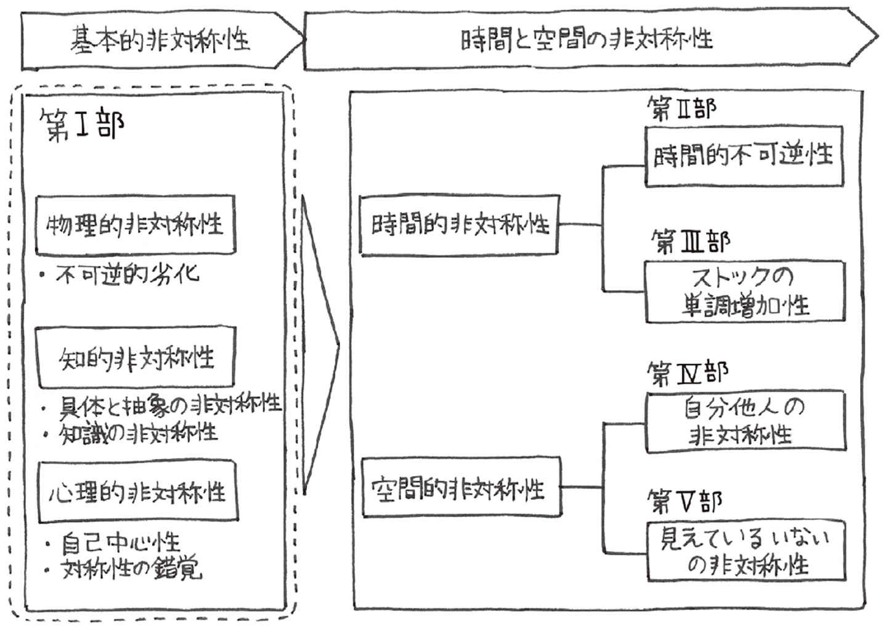
まず、本書に通底するテーマというべき「非対称性」を生み出す人間の心や行動を紹介します。第Ⅱ部以降で述べる「時間と空間の非対称性」は、その「三つの非対称性」が基本原理となって発生しています。
続いての第Ⅱ部から第Ⅴ部では、大きく時間的と空間的とに分かれる非対称性を各々二つずつに分けて解説します。
本書は、私のこれまでの著作（巻末にそのリストと概要を示します）で別々に発信してきたキーメッセージをさらに集約・抽象化してシンプルなメッセージとしてまとめたものです。各章で述べる個別の「法則」の基 となった具体例や背景をさらに詳しく知りたい方は、そちらを参照してください。
本書の提示する「勘違いの可視化」によって、少しでも読者の（私自身が膨大な時間を費やしてきたような）「無駄な抵抗と労力」がなくなることを祈ります。
二〇一六年二月
細 谷 功
「無理」の構造 目 次
第1
章
錯覚の積み重ねと「三つの非対称性」
「善と悪」は対称か
第2
章
「知識」の非対称性、「思考」の非対称性
知的能力が理不尽さを生み出す
第3
章
「具体と抽象」の非対称性
お金で上下関係が生まれるのはなぜか
第4
章
「言葉」という幻想
「わかっているつもり」を二円図で表す
第6
章
１
９の「ねじれの法則」
「教えられること」と「求められること」は違う
第7
章
気づきにくい社会や心の不可逆性
湯は冷め、振り子は止まる
第8
章
社会・会社の劣化の法則
「盛者必衰」の真理からは逃れられない
第10
章
上流・下流の法則
不毛な議論に費やされる膨大な時間
第11
章
「微分と積分」と現実
増やすのは簡単、減らすのは困難
第13
章
折り曲げの法則とストックのジレンマ
「対極」は「紙一重」に変わる
第14
章
大企業「病」という幻想
もう「あの時代」には戻れない
第15
章
宇宙と「人間の心」
「絶対的中心」があるかないか
第16
章
コミュニケーションという幻想
「言葉の意味」の共有は難しい
第18
章
「対等」という幻想
批判する人とされる人の間に横たわるものは
第19
章
決定的な非対称性
「見えていない人」には「見えている人」が見えない
第20
章
「全体像」という幻想
自分の視野の狭さには気づきようがない
第21
章
「経験則」という幻想
自分の経験が「部分」であることに気づけない
「無理」の構造 この世の理不尽さを可視化する
第Ⅰ
部
対称性の錯覚
山 路 を登りながら、こう考えた。
智 に働けば角 が立つ。情 に棹 させば流される。意地を通せば窮屈だ。とかくに人の世は住みにくい。
住みにくさが高 じると、安い所へ引き越したくなる。どこへ越しても住みにくいと悟った時、詩が生れて、画 が出来る。
人の世 を作ったものは神でもなければ鬼でもない。やはり向う三軒両隣りにちらちらするただの人である。ただの人が作った人の世 が住みにくいからとて、越す国はあるまい。あれば人でなし の国へ行くばかりだ。人でなし の国は人の世 よりもなお住みにくかろう。
越す事のならぬ世が住みにくければ、住みにくい所をどれほどか、寛 容 て、束 の間 の命を、束の間でも住みよくせねばならぬ。ここに詩人という天職が出来て、ここに画家という使命が降 る。あらゆる芸術の士は人の世を長閑 にし、人の心を豊かにするが故 に尊 とい。
──夏 目 漱 石 『草 枕 』（岩波文庫）より
第1 章
錯覚の積み重ねと
「三つの非対称性」
「善と悪」は対称か
本書の中心的な概念となる「対称性の錯覚」について解説します。
まず、本書でいう「対称性」とは何かを定義しておきます。
私たちが日常経験する対称性で身近なものは「左右対称」です。服や製品、あるいは絵や写真の構図などで左右が同一形状で、向きだけが逆になっているもののことを意味します。
ここで重要なキーワードは「左右が同じ」ということです。
つまり、対称性とは、「（何らかの基準で）二つのものが同等である」ことであると本書では定義します。「同等である」というのは、ある側面や判断基準を設定すると、それらが同じであるということです。判断基準というのは、例えば「形」であったり「関係性」であったりします。
続いて「対称性の錯覚」の説明に移ります。これは「本当は対称でないものを対称だと勘違いしている」（あるいは薄々は感じていても明確に意識していない）ことを意味します。例えば、ＡからＢに行くのと、ＢからＡに行くのとでは同じだと思っているのに、実は「逆向きは簡単ではない」（あるいはその逆）というのは「変化方向」という点での「対称性の錯覚」です。
例えば「善と悪」との関係について考えてみましょう。これらは小学生でもすぐに答えられるような「反意語」であり、同等かつ反対の概念のように思えますが、実はこれらの間にもさまざまな非対称性が存在しています。「良いことでニュースに出るのには何年もかかるが悪いことなら一瞬で出てしまう」ということや、「一つの善事で世の中はなかなか変わらないが一つの悪事で世の中は一瞬で変わる」（テロのあとのセキュリティ対策など）、といったことです。
このように、善と悪は明らかに同等のものではないのですが、その非対称性を普段我々が意識することはありません。
このほかにも、私たちがなにげなく反意語であると考えている二者の関係が対称でないものはいくらでもあげられます。
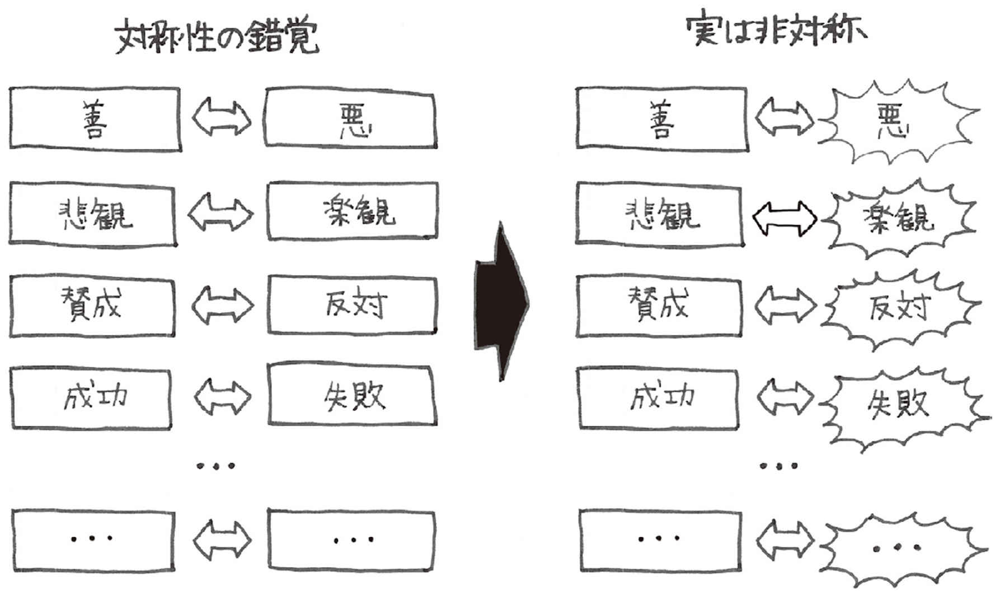
・「悲観」と「楽観」......なぜか悲観論のほうが「賢そうに」見える
・「同じ」と「違う」......「同じ」は一通りだが、「違う」には限りない可能性がある
・「変える」と「変えない」......変えないのは楽で無難だが、変えるには膨大なエネルギーが必要
・「知っている」と「知らない」......一度知ったら知らない状態には戻れない
・「満足」と「不満足」......満足した人は黙っているが、お店のアンケートにコメントを残すのはたいてい不満な人
......
このような「錯覚」の積み重ねが、私たちが日常感じる「理不尽さ」の根本にあるというのが本書の仮説です。
続いて、どのようにしてこのような「非対称性」が生まれてくるかを考えてみます。まずは誰が考えても非対称であることがわかりやすい例を考えてみましょう。直観的に考えて、例えば冒頭に述べた例のように「左右」に関しては同等のものが多く、これを同等と考えることにあまり違和感はないかも知れませんが、これに比べると「上下」を同等に考えるのには違和感を覚える人が多いでしょう。これはなぜでしょうか？ 「左右と上下が違うのは当たり前だ」と思う方、首を九〇度横に倒して見てください。さっきまで上下だった方向が左右に変わるはずです。ところが、「上下」はそのまま変わりません（「左右」と「上下」が同じ方向になります）。
次の図を見てください。
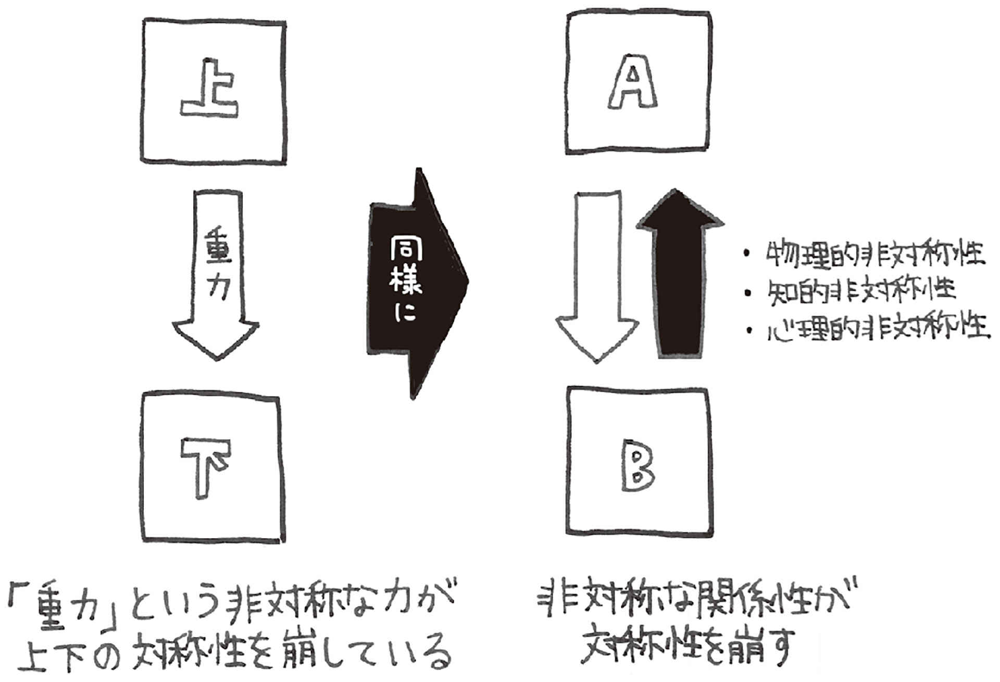
「上」と「下」との間には、「重力」という一方向の力が働いています。したがって、ものは上から下には他に力が働かなくても落下しますが、逆向きに自然にものが動くことはありません。つまりこれが上下が非対称であると私たちが直感的にわかる決定的な理由です（現に重力がない宇宙空間では「上下」という概念はありません）。
これと同様に、先にあげたようなさまざまな非対称性の陰には、重力ほど明らかでなくとも一方向に作用している「見えない力」あるいは「見えないメカニズム」の存在が確実にあるのです。これは物理学の法則のように誰がみても客観的に働く公式にできるものではないとしても、人間が持っている根本的な性質に基づくところが大きいので、いつでもどこでもほぼ確実に当てはまる法則と言えます。
ここでは、このような人間や社会が従っている根本的な対称性を以下の三つに大別して解説します。
・物理的非対称性
・知的非対称性
・心理的非対称性
「物理的非対称性」の詳細は後述（第Ⅱ部）とし、まずは「知的非対称性」から見ていきましょう。
第2 章
「知識」の非対称性、
「思考」の非対称性
知的能力が理不尽さを生み出す
ここでは人間が持っている「対称性の錯覚」の中で知的能力に関することを述べます。人間を人間たらしめる最大の特徴は、他の動物に比べて圧倒的な知的能力を持っていることです。ところがその知的能力こそがさまざまな理不尽さを生み出しているのです（だからおそらくアリやマグロやサンショウウオは理不尽さに悩んでいることもないでしょう）。端的にいえば、「理不尽さ」が生じるのは、「理」があるからなのです。
まずは人間の知的能力を単純化して「知識」と「思考」の二つの方向性に分けます。料理にたとえれば、知識が食材、思考が調理（加工）という関係です。料理と同じく「おいしい料理」を作るためには「新鮮で良質な食材」と「腕の良いシェフ」が必要だということです。
「知識」と「思考」に分けた理由は、これら二つの要素に別々の非対称性が潜んでいることによります。
まずはこれら二つの特徴を明らかにしていきましょう。
二つの知的能力とそれを利用した人間の知の発展のイメージを次の図に示します。
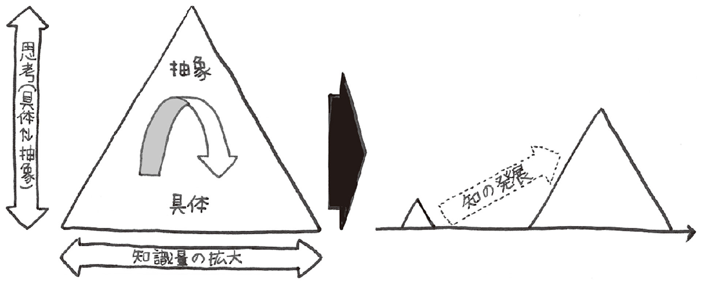
図の左側の三角形では、思考と知識を縦軸と横軸に分けて表現しています。ここでの知識とは、まさに料理の食材のイメージで、人間の「知の食材」です。料理とも共通するのは、素材から作り出した「完成品」は、また次の料理の材料になることもあったりしながら、徐々にネタが増えて行く点です。逆に食材との相違は「使っても減らない」つまり基本的には増える一方である点です。
対して「加工」に相当する縦軸の思考ですが、ここではシンプルに「思考とは具体と抽象との往復で新たな知を生み出すこと」と定義します。キーワードは「具体と抽象の往復」で、図中の三角形の縦軸は下が具体、上が抽象という関係の具体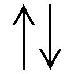 抽象という軸を意味しています。つまり知の発展とは、「具体と抽象を往復しながら知識の量と抽象度を上げていくことである」というのが前掲の図の右側の三角形で、成長していくイメージを表しています。
これらの「二つの知的能力」は異なる特性を持っています。特に本書のテーマである「非対称性」についてその違いを見てみましょう。
まずは知識における非対称性です。それは、先に述べた通り、「増えることはあっても減ることはない」ことです。一度覚えたことは簡単には忘れません。もちろん年を取れば、記憶力が衰えたり、忘れっぽくなったりはしますが、これは「思い出す能力」が衰えただけで、記憶そのものが減っているわけではないと考えればよいでしょう。特に幼少時の習慣やはじめに覚えこんだ基本的な価値観はそう簡単になくなっていくものではありません。
つまり「覚える」と「忘れる」はＰＣデータを簡単に「上書き」したり「リセット」したりするような完全な双方向ではなく、非対称です。
また「知っていること」と「知らないこと」も非対称です。大抵の人は「知っているもの」と「知らないもの」を二択で選べと言われたら「知っているもの」のほうを選びます（典型的に現れるのは、選挙での「現職」や「有名人」の強さです）。
「無知→既知」という流れの不可逆性も、もう一つの非対称性です。そして「知識を増やすこと」＝賢くなる ことは、一般には肯定的にのみ捉 えられがちですが、時に諸悪の根源にもなります。
このような「知識の非対称性」の影響については第Ⅲ部で改めて詳細に解説します。
第3 章
「具体と抽象」の非対称性
お金で上下関係が生まれるのはなぜか
引き続き「縦軸」の思考に関する非対称性について解説します。前述の通り、ここでは「具体と抽象の往復による新たな知の創造」を「思考」とします。これを踏まえて着目するのは、「具体と抽象の非対称性」です。
本章のテーマである「具体と抽象」については拙著『具体と抽象』（ｄＺＥＲＯ） に詳しく述べています。本書ではそのエッセンスを以下にお伝えしますので、もしこの話題に興味があれば同書をご参照ください。
まず簡単に具体とは何か？ 抽象とは何か？ 具体と抽象の往復とは何か？ について整理しておきます。具体と抽象の比較を示します。
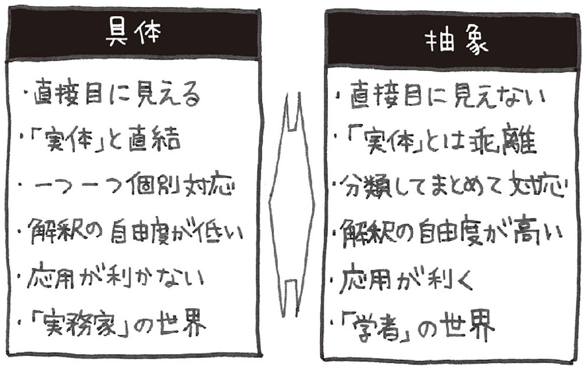
具体とは直接目に見えるものであり、抽象とは、複数の具体的事象から人間が何らかの意図を持って共通点を抜き出してパターン化したものです。人類が抽象化で生み出した産物の代表的なものとして、「言語」や「数」をあげることができます。「数」を例にとると、「３」という概念によって、猫３匹も刀３本も車３台も同じように「３」として扱えるようになることで、足し算や掛け算があらゆるものに適用できるようになるというのが抽象化の威力です。これによって人類は「一を聞いて十を知る」ことができるようになり、飛躍的に知の世界を広げることができるようになりました。
「お金」という概念も人類が生み出した画期的な抽象概念ということができるでしょう。「百円」という価値を抽象化したことで、世界中のどんなもの同士でも交換が可能になり、経済活動が生み出されました。
前述の通り、人間の知は具体と抽象の往復による知の創造によって発展してきています。まずはさまざまな個別の具体的事象を観察し、それらから共通のパターンを読み取り、そこから抽象化することで一般的な法則やルールを導きます（具体→抽象）。
例えば科学におけるさまざまな法則というのは、個々の事象を観察し、そこから何らかの仮説を立てて法則をモデル化し、それをさらに実験によって検証するという手順を踏みます。
いったん法則ができてしまえば、あとはさまざまな分野に応用することができます。例えばニュートンの運動方程式は、地球上で運動するあらゆるものに適用することができ、さまざまなものを作るのに応用されています（抽象→具体）。これがまた新たな具体的な事象を生み出すことで人類の知がさらに発展していくというわけです（次の図）。
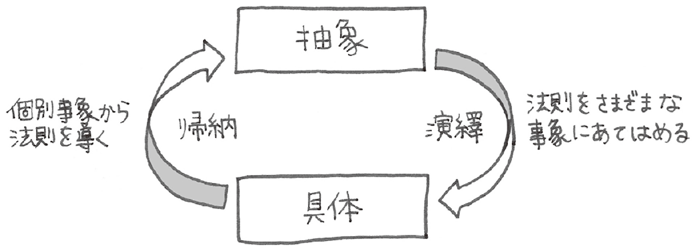
このように人類の知力＝抽象化（＋具体化）といってもよいほどに、具体と抽象の往復としての思考の価値はいくら強調しても強調しすぎることはないのですが、知識と同じように、この抽象化という能力そのものが同時に人間社会にさまざまな軋 轢 を生み出しています。その非対称性について解説していきましょう。
一つ目の非対称性は、「抽象化の不可逆性」です。これは先に述べた「具体と抽象の往復」とは趣旨が違います。抽象化とは一種のパターン化、法則化ですが、人間はよくも悪くも、一度法則化・ルール化してしまうと、そのパターンが変化しても、覚えた法則やルールを疑うことなくいつまでも使い続けるということです。
例えば文法がそれに相当します。もともと実際に人々が使っている言葉を法則という形で抽象化したのが文法なのに、いつの間にかそれが一人歩きして、正しいのは文法のほうで、新しい言葉が文法に反しているとそちらのほうが間違っていることになってしまうのです。会社の規則や法律でもしばしばそのようなことが起こります。もともと具体レベルの事象から生まれた抽象レベルの決まりごとが、具体レベルが変化しているのに固定化することで具体と乖 離 してしまうのです。
二つ目の非対称性は、いわば具体と抽象が「マジックミラー」の関係になっているということで、抽象レベルを理解している人には具体が見えるが、具体しか見えていない人には抽象レベルは見えないということです。
要は具体レベルは「目に見える」ものなので誰にでもわかりやすいが、抽象レベルの「概念」というのは「見える人にしか見えない」ということです。
一つの例をあげれば、学生時代に歴史や地理など、具体的な事象の「暗記もの」の授業に「ついていけない」人はあまりいなかったと思いますが、数学の授業、とくに単純計算ではなく高校や大学で学習するような抽象度が高い内容には「ついていけない」人が出てきたと思います。これは物理や哲学といった抽象度の高い学問でも同様です。
またネットの議論などで、メッセージをシンプルにして「○○すべきだ」と言い切っている人に対して細かな例外事項をあげて、「こういう場合もある、こういう人にも会ったことがある」という形で「そうとばかりは言えない」と反論する人......という対立構図が見られます。これもたいていの場合、発信者は具体レベルの詳細については十分承知した上で単純化した抽象レベルでメッセージを発しているわけですが、具体レベルでしか物事を見られない人が反論をしているという構図になっており、そういう人は構図自体に気づいておらず、「あの人は現場をわかっていない」といった発言になるわけです。
同様の一方向性、不可逆性の例として、抽象の世界というのは、いざ自分が見えるようになってしまうと、見えなかったときの自分の気持ちにもどるのが難しくなり、逆に抽象化なしではいられなくなってしまうということが挙げられます。小学生のときにやった「つるかめ算」の解き方について、一度方程式を覚えてしまうと、もはや「ｘ、ｙ」（といった抽象化）なしのやり方はできなくなってしまいます。
言葉についても同様です。言葉というのは、ある抽象概念の表現方法であり、非常に便利なツールなので、「一度手に入れたら」手放すことができなくなります。
これが先述のマジックミラーの法則と合わさって起きるのが、「専門用語」や「カタカナ言葉」に関してのコミュニケーションギャップです。専門用語やカタカナ言葉というのは、使われるほうからすると、「なぜわざわざ そういう言葉を使わなければならないのか」とか「格好つけやがって」という不快な印象を持つことが多いのですが、使っているほうからすると（もちろん格好つけるために使っている人も一定割合は存在しますが）一度その概念を示す言葉を覚えてしまうと、むしろその言葉を平易な（より具体的な）言葉で表現するのが難しくなってしまうのです。
その証拠に、それまで「格好つけやがって」と言っていた人も、いざその言葉が表す抽象概念をその言葉と一緒に理解してしまうと、コロッと変わってしまい、何の抵抗もなくその言葉を使い始めてしまうのです。
現代人が江戸時代にタイムスリップして、当時の人に「ドラッグストアのレジでゲットしたポイントカードをワイシャツのポケットに......」なんて話をしたら、江戸時代の人からはきっと「『意識高い系』の宇宙人」に見えることでしょう。
同様の非対称の話がさまざまなルールや規則、あるいは「常識」にもあてはまります。
抽象化とは、同様なものを共通の特徴にあてはめるか否かであり、境界に「線を引く」ことです。ところがこの「線」は、一度引いてしまうとそれが固定化します。実際の具体的な事象が変化しているのに、いつまでたってもその「線引き」から逃れられなくなってしまうのです。
具体と抽象では自由度、あるいは汎用性の違いがあります。具体は自由度が低く一つ一つ特殊であるのに対して、抽象は自由度が高く、一般性があるのが特徴です。
この「自由度の違い」はなかなか普段のコミュニケーションでも明確に意識されないので、日常生活においてさまざまな「目に見えない違和感」として感じることになります。すべて具体レベルで認識する人にとっては「（解釈の自由度が高いために）抽象的でわかりにくい指示」も、抽象の世界を見ている人は「自分の裁量で具体的なやり方を決められる」というふうに、肯定的に捉 えることができるからです。
具体と抽象の自由度の違いが私たちの生活に決定的な影響を及ぼした例が「お金」です。「お金」というのは、人間が生み出した最も重要な抽象概念の一つですが、このお金の発明によって、もともと対称性があったはずの「物々交換」（具体と具体）が、「モノとカネ」という「具体と抽象」の交換である「売買」に変わることによって、交換範囲が一般化され、飛躍的に拡大したという変化とともに、交換行為そのものを非対称にするという大きな変化ももたらしています（次の図）。
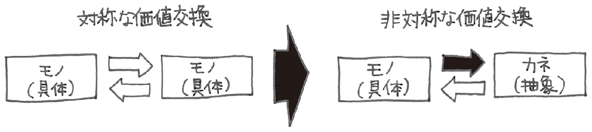
この交換の非対称化によって、売買には「上下関係」が発生しました。つまり、通常「買う側」（お客）のほうが「売る側」（お店などの販売・提供者）よりも優位な関係になります。「接待する」という行為が発生するのもこの非対称性によります。医者などの「先生」と呼ばれるような一部の職種の特殊なサービスを除けば、お金の圧倒的な自由度がこのような「上下関係」を生み出し、「具体と抽象」が人間心理にも大きな影響をもたらした例と言えるでしょう。お金にまつわるさまざまな理不尽さもつきつめれば、お金が持つ「抽象度の高さ」がもたらしているのです。
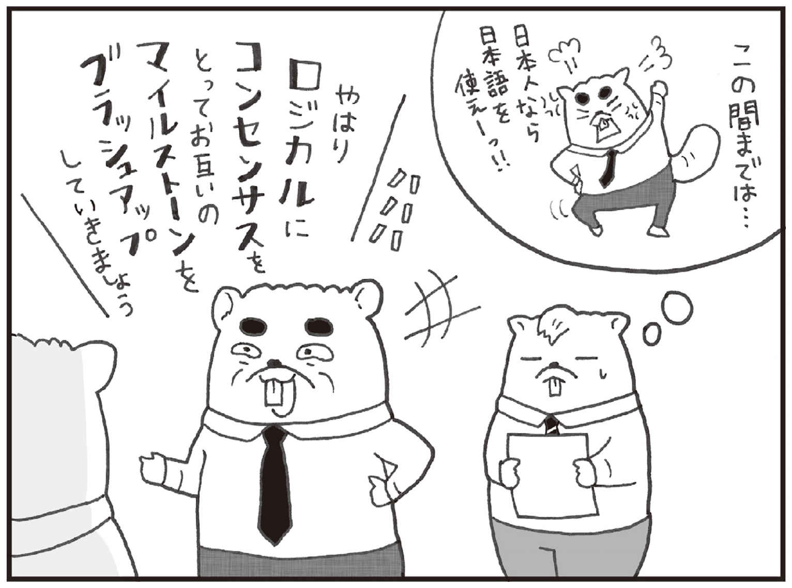
第4 章
「言葉」という幻想
「わかっているつもり」を二円図で表す
人類が手にした最強の抽象化ツールとしては、「数」と並んで「言葉」があげられます。言葉のおかげで人類のコミュニケーション能力も飛躍的に向上した反面、さまざまな誤解の温床ともなりえます。
言葉には、抽象度が高いがゆえに「定義や解釈の自由度が高い」という特徴がありますが、往々にして人はこの「定義や解釈の違い」を意識せぬまま言葉を使うことで無用な誤解を生み出し、またその誤解に気づかぬまま「コミュニケーションしたつもり」「わかっているつもり」になっているのです。
ここでは「二円図」というツールを用いて言葉の曖 昧 さの例を見てみましょう。これは以下に示すように、数学の世界の「ベン図」と表現形式は同様ですが、もう少し広い使い方で単に「ＡとＢ」という二つの言葉の関係性を二つの円で表現するというものです。また、あえて単純化して次の二項目にのみ意味を持たせています。
①二つの円の大小関係（Ａ＞Ｂ、Ａ＝Ｂ、Ａ＜Ｂの三通り）
②二つの円の交接関係（離れている、交わっている、包含されている）
これら、各々三通りの組み合わせで表現の仕方は次の図のように九通りになります。
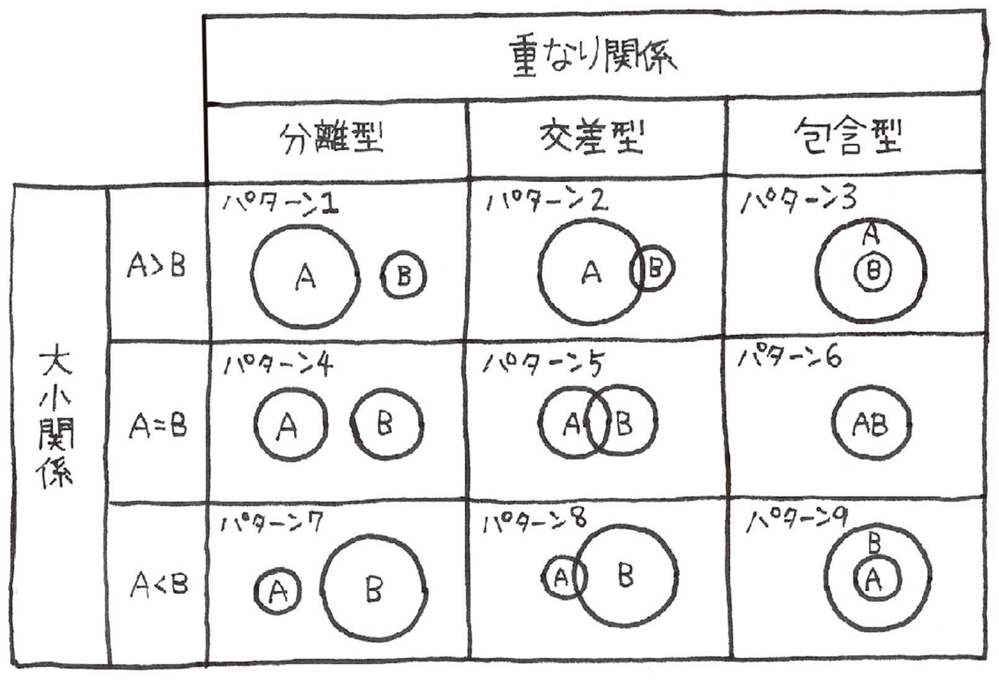
二つの円を使って、「会社と自分」「仕事と遊び」「動物と人間」といった、二つのものの関係性を表現してみます。さまざまな人にこれをやってもらうと、驚くほどに人によってこれらの言葉の関係性の捉 え方が違うことがわかります。
「会社と自分」を具体例としてあげると、例えば代表的に次の図のようなパターンが想定されます。
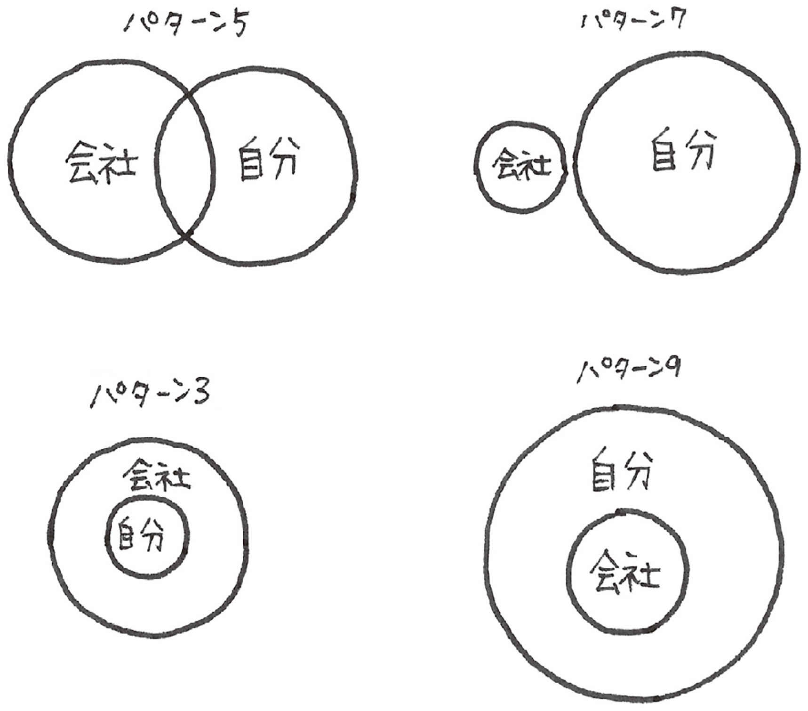
比較的ありそうなのは、左上の「パターン５」でしょうか。会社と自分の接点がありながらもお互いに関 わらない部分も存在しているパターンです。「会社と距離を置いている」人は両者が交わらず、かつ自分の存在が大きくなる「パターン７」かもしれません。
戦後日本の「猛烈ビジネスマン」はあたかも「パターン３」であるかのように見えました。「自分のすべてを会社に捧げている」イメージです。かたや「自分の夢の実現のために会社を利用してやろう」というしたたかな考えを持った人は「パターン９」のように書くかもしれません。
この図による表現によって、その人がその言葉のどの側面を抽出してその関係性を表現するかがわかります。言葉をさらに抽象化して、その言葉のどの側面を最も強く意識しているかが表現されるということです。
「大小関係」はわかりやすいですが、各々の言葉の自分にとっての相対的な影響度が表現されます。また包含関係の場合は、どちらが「外側にくるか」が単純な範囲の大小関係の場合もあれば、依存関係や「部分集合」の関係を表すこともあります。二つが離れている場合は、各々が独立している、あるいは「別もの」であるといった特徴が表現されます。
先の「会社と自分」の関係を考えると、会社を「批判する」人と「愚痴をいう」人との違いも説明できるのではないでしょうか。会社を批判する人というのは、会社の外からものを申しているイメージですが、会社の中に取り込まれている人は、結局「最後は従うしかない」という従属関係を意識してそれが「愚痴」という形になるのでしょう。
だから後者のような人は、会社という船に乗っている以上、会社が沈めば自分も沈むこともわかっているので、「会社を訴える」ところまではいきません。「会社が敵」になるのは、その意識が離れた瞬間ということになるでしょう。
ここまで読んだ読者の中には、「図の形が人によって違うのは当然だ。そもそも言葉の定義が曖昧だからだ。問題文にそれを明確に定義すれば形はもっと絞れてくる」と思った人がいるかもしれませんが、実はまさにそのことがこの話のポイントです。
日常生活で私たちは、このような言葉というものを共通の定義もなく「各自の勝手な定義で」用いて（その定義が相手とまったく異なっていることすら意識しないで）「会社と個人の関係」や「仕事と遊びの関係」について語って議論しているのです。そもそもの言葉の定義が違っているのですから、本当の意味での議論などできるわけがなく、そこで行われているコミュニケーションがいかに「砂上の楼閣」であるかがわかってもらえるでしょう。
試しに前述の問題以外の「例題」をあげておきますので、周囲の人とやってみると面白いと思います。いかに私たちのコミュニケーションが幻想であったかがよくわかるでしょう。コミュニケーションについては第Ⅳ部でも説明します。
・理想と現実
・運と実力
・女と男
・現在と未来
・自分の幸せと他人の幸せ
第5 章
「人間心理」の非対称性
水は低きに流れる
次の非対称性は人間心理によるものです。
人間心理にもさまざまな非対称性がみられます。これがここまでに紹介してきた知的非対称性や第Ⅱ部で紹介する物理的非対称性と組み合わさることでさらにさまざまな「対称性の錯覚」を引き起こし、ひいては個々人への理不尽さとなっていきます。
ここでもまず、時間の非対称性、つまり不可逆性について見てみましょう。
人間心理にはさまざまな不可逆性が潜んでいます。物理的な非対称性と同様、片側へは無理せずとも「自然に」流れていきますが、逆方向に戻すには大変な労力が必要になります。
・厳しいものから楽なものへは自然に流れていくが、逆は相当の覚悟が必要
・思考状態から思考停止へと流れやすい（考えないほうが楽なので知的に怠惰な方向へ流れていく）
・刺激はどんどん強いものを欲していく
・一度手に入れたものはなかなか手放せない
・生活レベルを上げるのは（金銭的余裕さえあれば）簡単だが、下げるのは難しい
これらに共通するのは、（物理現象と同様）「水は低きに流れる」ことと、「現状（以上）の維持を望む」傾向です。また人間は一般的に、第１ 章で述べたように基本的に保守的であり、「変えること」よりも「変えないこと」を選びます。（ポジティブなものを）「増やす」ことには抵抗がないのに「減らす」側の変化には大きな抵抗を示す傾向があります。
そして私たちの印象を変えるのは、「絶対値」よりも「相対的な変化」です。例えば、価格に関する印象は、教科書的にいえば、「そのものの価値」によって決まるはずですが、実際にその「価値」の印象はどこで決まるかといえば、絶対的な数値よりは、「他社の製品との比較」や「昨年との比較」によって決まります。
ほかに、私たちには「判 官 贔 屓 」という性向もあります。
・天才よりは努力の人
・勉強ができる子よりは勉強以外ができる子
・高学歴よりは低学歴
・生まれながらのエリートよりは叩き上げ
といったように、基本的には強者よりも弱者を応援したくなるのは、どこの世界にもある人情とでもいえるでしょう。
これは必ずしも日本人だけの傾向ではありません。ハリウッド映画に出てくるような「アメリカンドリーム」だって、社会的弱者がスーパースターになるほうが、生まれついてのエリートがスターになるより人気が高いことを見ても、それは明快です。
この人間心理は次章で述べる「１：９の法則」にもつながっていきます。
第6 章
１ ９の「ねじれの法則」
「教えられること」と
「求められること」は違う
テレビドラマや小説のヒーロー像は大抵決まっています。
「型破り」で、「個性的」で、「他人を平等に 扱い」、「大きな夢を持って」「正直で正義感が強く」「言いたいことをはっきり言う」人です。
「平凡」で「上の人にはへつらって下の人には偉そうにし」、「現実的なことばかり考えて」「うまく本音と建前を使い分けて」「言いたいことがあっても黙っている」タイプの人がヒーローになることは決してありません。
たとえ後者のような「平凡な人」が主役の物語があったとしても、それは「平凡でダメな人でも最後は前者のようなヒーローになれる」ことを表現するためであり、いずれの場合も「憧 れのヒーロー像」は確定しています。
でも実際の世の中を見てみると、多いのは圧倒的に後者のタイプであり、しかも現実的に社会でうまく生き延びたり、組織の中で出世していくのも後者であることは、決して少数の例外事項ではありません。
子供たちへの教育にも同じような構図があります。
少なくとも小学生ぐらいまでの子供に対しては、親も教師も「前者であれ」と教えるのですが、子供が成長するにつれて、いかに後者のように振る舞って「波風を立てずに他人とうまくやっていくか」が重要であるかを教えるようになっていきます。
「個性を殺すべし」という無言の圧力の強さは、日本社会において顕著な気もしますが、「上下関係で態度を変える」「うそやごますりをすることで組織の中で出世していく」人が多いのは、何も日本だけの話ではありません。
つまりここには、一般に日本人的といわれる「本音と建前」に関する非対称性が隠れているわけですが、プレゼントされたものには（どんなに気に入らなくても）「これ欲しかった」と言うとか、上司の冗談にはどんなにつまらなくても一応笑うといった言動は海外でも当たり前ですから、世界共通のものといってよいと思います。
これがどのような「理不尽さ」を生み出すか。先述の「前者」と「後者」との非対称性、つまり実態としての人数や必要な場面の数では前者：後者は「１：９」であるのに対して、「あるべき姿」として公の場で語られる割合（「声の大きさ」）はまったく逆の「９：１」になっているねじれ現象からさまざまな理不尽さが生まれていると言えます（ここでは「圧倒的少数」と「圧倒的多数」との比率を象徴的に「１：９」と表現しています）。
「能動的であれ」とは世の中で常に言われることです。「受動的であれ」という話はあまり聞きません。ところが次の図で示すように、実際の世の中で求められているのはたいていの場合は受動的な人です（本当に世の中、特に会社や学校などの組織の中で能動的な人があふれたら大変なことになります）。
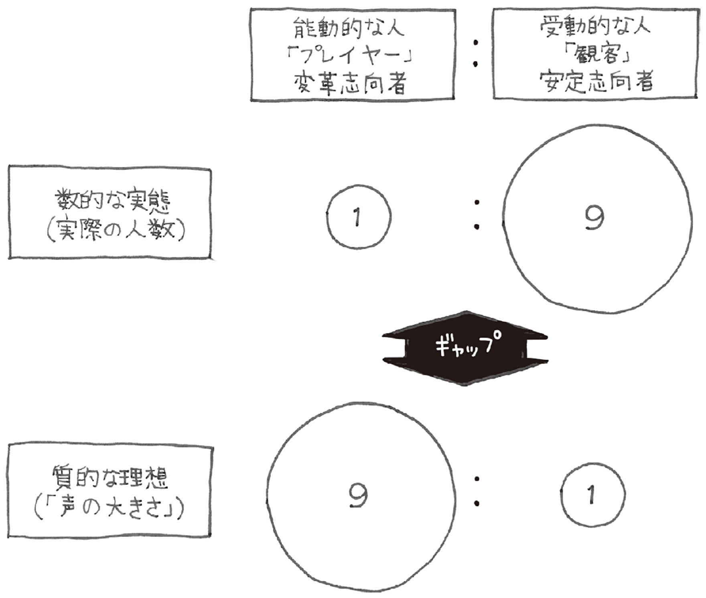
「新しい変化を望む人」（革新派）と「これまでのままで変化を望まない人」（保守派）との関係も同様と言えます。「新しいことへの挑戦が大事」と皆が主張しているようですが、世の中の人全員が本当に挑戦を始めたら収拾がつかなくなるでしょう。挑戦者が安心して挑戦できるのは、実は多数の「挑戦しない」人たちの日々の地道な活動に支えられているから、ということも忘れられがちです。
「１」は絶対にある程度以上の割合にはならず、常に必要な割合より少ないというのがこれらの現実の前提にあります。
なお、次のような関係性においても同様の構図が当てはまります。
・世の中を変える人と動かしている人
・「見えている」人と「見えていない」人（第Ⅴ部で詳述）
・発信している人と受信している人
・「プレイヤー」と「観客」（実際に前面に出て戦っている人と、それを側で見てああでもない、こうでもないと言っている人）
・本当に自分で目利きができる少数の人と、それに同調するだけの多数の人
大体において「１」が世の中の方向性を支配し、「１」は憧 れられる存在として君臨します......が、結局世の中は「９」の論理で動いているのです。世の中はたいてい、「アイデアのあるところに金はなく、金があるところにはアイデアがない」というのも、この法則の一つの例と言えるでしょう。
特に第Ⅱ部で述べる「下流」の民主化された社会では、基本的に「９」の論理で世の中が動きますから、このねじれの構図は一層明確なものとなります。
さらに先の「判官贔屓」というマイノリティを大きく評価してしまう非対称な性質を持つ心理バイアスがこうした傾向に拍車をかけます。実は量的には「１」しか占めていない側のほうが「９」の発言力を持っているかのように見えてしまうということです。
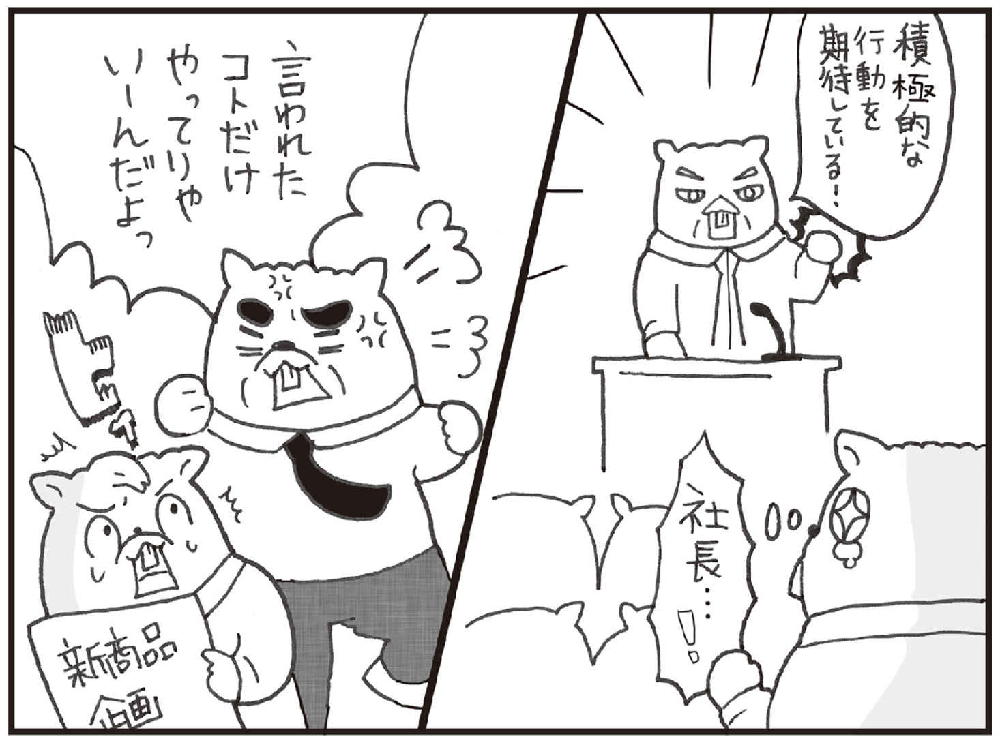
第Ⅱ
部
時間の不可逆性
祇園精舎の鐘の声、諸 行 無 常 の響あり。娑 羅 双 樹 の花の色、盛 者 必 衰 のことわりをあらはす。奢 れる人も久しからず、唯 春の夜の夢のごとし。たけき者も遂 にはほろびぬ、偏 に風の前の塵 に同じ。
──『平家物語』巻第一「祇 園 精 舎 」（『平家物語（一）』岩波文庫）より
第7 章
気づきにくい
社会や心の不可逆性
湯は冷め、振り子は止まる
第Ⅱ部から第Ⅴ部では、第Ⅰ部で解説した、人間が物理的、知的、心理的に持っている非対称性がさらに具体的な人間の個別の行動や思考にどのような影響を与え、それがどういう形で「理不尽さ」となっているのかについて解説します。
第Ⅱ部で扱うのは、時間の不可逆性、特にその質的な側面です。
私たちの身の回りのさまざまな変化というのは、大きく二つに分けられます。それはその変化がＡ→ＢとＢ→Ａと双方向にまったく同等であるものと、それらが異なるものです。例えば、東京から名古屋に移動するのと、名古屋から東京に移動するのとでは、「時間」や「交通費」に関しては同じと考えられます。ところが、坂の上から下への移動と下から上への移動では、明らかに所要時間も使う筋肉も異なります。このような変化の非対称性の程度が大きくなっていくと、片側の方向は自然になんの苦労もなく変化するのに、逆方向には多大な労力を費やす、あるいは事実上不可能と呼べるものも出てきます。これが「不可逆性」です。
湯は放っておけば冷めることはあっても、「自然に」熱くなっていくことはありません。また運動している振り子は、（空気抵抗や摩擦などによって）ゆっくりとですが動きが遅くなり、最終的には停止してしまいますが、何もしないのに振れ幅が大きくなっていくことはありません。
このように不可逆的な現象というのが、人間の社会や気持ちにも存在しています。ところが物理現象と違って、このような現象はその不可逆性に気付きにくいことが多いのです。「いつでも逆に戻せるさ」と思っていても実は逆向きに動かすのには多大なエネルギーが必要なので、自然に片方向の変化のみが進行していくことになります（次の図）。
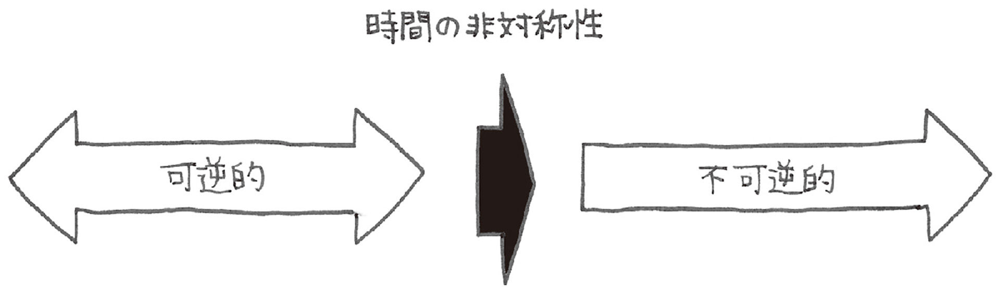
このような現象の積み重ねで、いつのまにか「こんなはずではなかった」という事態になってしまうというのが、時間の不可逆性による不合理の発生原因です。ではそのような不可逆性は、どのような場合にどのような方向に発生し、それが人間の社会や個人の心理にどのような影響を及ぼしていくのかを単なる現象面だけでなく、なぜそれが簡単に抗 えない「法則」であるのか、その根本原因の考察とともに見ていきましょう。
第8 章
社会・会社の劣化の法則
「盛者必衰」の真理からは逃れられない
「盛 者 必 衰 」......『平家物語』で語られる、あまりに有名なこの言葉、人間にもその集団にも当てはまる真理です。ここで着目すべき点は、まさに人間の一生のごとく、成長し終わったあとには、最終的に必ず衰退の方向に向かっていくということです。つまり時間の不可逆性とは「いずれは劣化の方向に働いていく」ことを意味するのです。
世界のエネルギー問題が議論されています。化石燃料の枯 渇 がその話題の一つですが、実際には「エネルギー保存の法則」（熱力学の第一法則）から、宇宙全体のエネルギーの量は基本的に減ることはありません。では何が変化しているのかといえば、エントロピーと呼ばれる物理量が増大しているのです。このエントロピーという言葉は、エネルギーを補完する概念で、いわば「エネルギーの質」を表す指標です。熱力学の第二法則がこのエントロピーに関する法則で、「エントロピー増大の法則」と言われています。エントロピーは小さいほどエネルギーとしての質が良いことを意味し、これが大きくなるということは、エネルギーは劣化する一方だということです。
エントロピー増大の法則は、「熱は高いほうから低いほうへ不可逆的に移動する」とか、「電気エネルギーや位置エネルギーは、熱エネルギーに不可逆的に移動する」といった経験則から導かれるものですが、膨大な気体分子の挙動からも説明されています。
「エントロピーが増大する」とは、膨大な数の気体分子が、偏 った分布から、「偏りのない」乱雑な分布になるという変化を言います。水の中にインクを垂らすと、はじめは「偏った」形状の変化を見せながら最終的には水の中に広がって、必ず一様な濃さになります。逆向きの変化は決して自然には起こりません。このような挙動は、「人の集団」にもまったく同じように当てはまっているように見えます。これが正しいとすれば、人の集団としての社会も組織もエネルギーと同様に「劣化」の方向に変化していくということです。
具体的にどのようなことが「不可逆的に」起こっていくかをあげてみましょう。
・没個性化
個人の特性に関して、個性的な人が少なくなって、集団全体が個性のない集団へと変わっていく流れも不可逆的であるといえます。小人数のベンチャー企業は会社による個性の違いが大きいですが、何万人もの大企業は、みな同じような集団になっていきます。この構図を考慮すると、一つの体制下で成熟していく社会や会社においては年配者から見れば常に下の世代は自分たちよりも個性がないように見えるはずです。
・民主化
少数の人たちが特権階級を独占する状態から、多数の人による民主化の流れは不可逆的です。一度民主化されれば、多数の人の論理が世の中を動かしますから、余計に（たとえそれが組織のために望ましいものであっても）少数意見が採用されることはなく、よくも悪くも多数派が支配する世の中になっていきます。そうなると、非対称な人間心理により、大胆な変化は起こせなくなります。この体制が崩れることがあるとすると、それは外側にまったく異なる別の集団が立ち上がって旧体制を置き換える場合で、「自然に」逆向きに変化が進むことはありません。
・性善説から性悪説へ
「善と悪の非対称性」で見たように、はじめは少なかったルールや規則が、何らかの事件やトラブルのたびに増えていき、組織の前提が性善説から性悪説に流れていくのは不可逆的です。信号機も増えることはあっても減ることはありません。どこの家にも鍵 がかかっていないのどかだった田舎が、人口の増大による都市化により性悪説がベースになって鍵が増えていくのも同じような構図と言えます。
このほかにも不可逆的に変化していく事象はいくらでもあげることができます（会社組織における不可逆性の事例とその要因分析については拙著『会社の老化は止められない』〈亜紀書房〉 を参照してください）。
人間が成長し、そしてやがては老化していくように、社会や会社組織も成長というポジティブな不可逆的変化のあとには必ず不可逆的な劣化が待っています（成長と劣化が紙一重のものであることについては、第13 章を参照してください）。「アンチエイジング」はもちろん重要なことではありますが、そもそも普遍的な流れに逆らっていることを自覚して取り組むことが「無駄な抵抗」を少なくするためには必要と言えるでしょう。
根本的にこの不可逆的な事象を解決するには、人間が新しい生命体を生み出して世代交代するがごとく、「別のものを新しく立ち上げる」しかないのです。
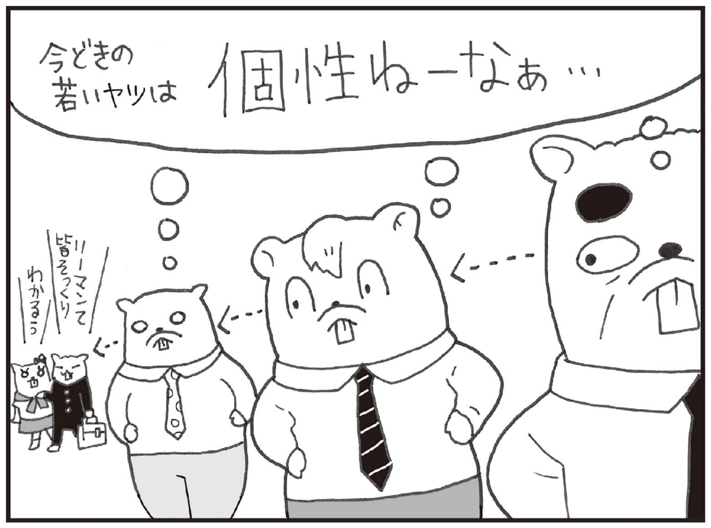
第9 章
具体化・細分化の法則
高度化すれば視野が狭くなる
社会に求められるニーズが、「難しく抽象度が高いもの」から「やさしくわかりやすいもの」になっていくのも不可逆的です。「多数決」や「視聴率」という、集団全体の意見が反映される政治やテレビ番組などはその流れが顕著に表れます。人々の関心が「政策から政局へ」「教養番組からバラエティへ」と変わっていく流れを「昔に比べてレベルが下がっている」と少数派の「教養人」が嘆くという構図はよく見られますが、これも不可逆の流れと言えるでしょう。
この流れは「劣化」というよりは、（あたかも先述の気体分子の運動のように）大多数の平均レベルに合ってくるということです。「政治（家）のレベルが時代とともに下がっている」とすれば、それは有権者全体の意見が反映されるようになったからであり、「テレビ番組がくだらなくなっている」とすれば、それは視聴者全体の平均レベルに合ってきているだけでしょう。
教養や学問の世界も同様です。「なぜ？」をつきつめて「世の理 」を追究する学問よりも、ハウツーを書いた本の部数や点数が増えていくのは当然の流れです。それを「劣化だ」と言って少数の教養人が嘆く構図はまさに第６ 章の「１：９の法則」が当てはまる例と言えます。
組織の細分化も不可逆的に進行してきます。社会も組織も高度化するにしたがって専門知識が必要となり、細分化されて仕事も各専門家に分担されていきます。
また「組織の縦方向」、つまり階層の類 も構成員の数の増加にともなって不可逆的に増えていきます。役職の数も大きな流れとしては増える一方で、たまにそのような「劣化」に危機感を覚えた経営者がフラット化を唱えても、また増加傾向をたどります（第12 章参照）。
組織の細分化と知識の細分化は、鶏と卵の関係と言えます。専門領域が多くなるにしたがって専門組織も増え、専門家の種類も増える一方です。その結果として、世間知らずで視野が狭くなる、いわゆる蛸 壺 化はあらゆる分野で不可逆的に進行していくのです。
「抽象化とは線引きである」と第３ 章で述べましたが、「具体→抽象」の不可逆性から、一度引かれた線は一人歩きをするため、消滅させるのは非常に困難です。ビジネスにおける「業界」や学問の世界での「学会」の線引きなども、一度人々の頭の中に「常識」として埋め込まれた線は強い印象を持ち、またその閉じた世界の中で生きながらえる人たちに既得権益があることなどから、線を引きなおすのは容易なことではありません。
法律やルールも線引きの塊 です。一度決められた「国境」やさまざまな基準値を変更するのも大変な労力を必要とします。このようにして、細分化、蛸壺化は不可逆的に進行するのです。
第10 章
上流・下流の法則
不毛な議論に費やされる膨大な時間
「ゆく河の流れは絶えずして、しかももとの水にあらず」（鴨 長 明 『方 丈 記 』）
......世の中は常に変化していきますが、そこにはあたかも川の流れと同様の「上流から下流へ」という一方向の変化が多くの場面で見て取れます。
川の流れと同様、社会や組織も時の流れとともに上流から下流へと流れていきます。重要なのは、川の流れの上流と下流の特性が異なるように、社会や組織も上流から下流へと特性を変えながら変化していくところです（次の図）。
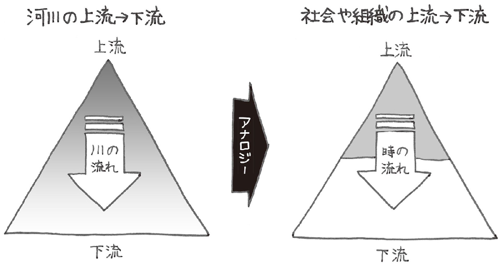
本章では、川の上流から下流へという流れをアナロジーによって考察し、人間が形成する社会や組織の「成長過程」を見ていきましょう。
ここで上流、下流といっているのは例えば次の図のような世界です。原始的な社会や組織が上流とすれば、そこから進化した文明化された社会や組織が下流です。また会社で言えば、起業したばかりのスタートアップ企業を上流とすれば、歴史を経て成長し、多数の従業員を配する大企業が下流となります。
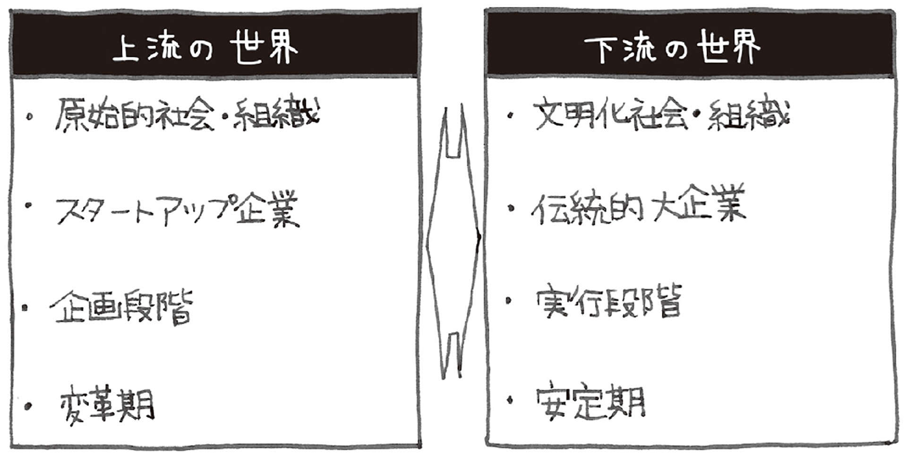
仕事の流れにおいては、企画構想の「やわらかい」コンセプトが上流とすれば、そこから具体化された実行段階が下流です。このような上流の組織や会社が多数存在するのが変革期で、下流の組織や社会が多数存在するのが安定期ということもできます。
このような定義にしたがって、上流下流各々の特徴を比較で示したのが次の図です。
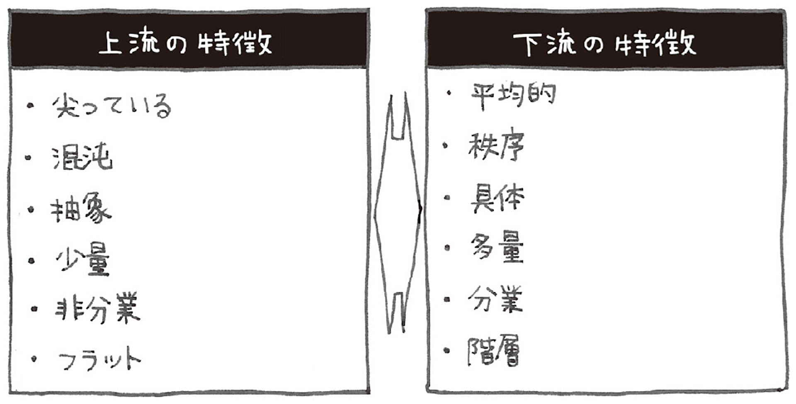
上流→下流への変化にしたがって、一つの組織や社会の中で人材がどのように変化していくかについても、面白いようにこの川のアナロジーが当てはまります。川の上流と下流で、川底の岩の変化を見ていきましょう。
・上流の岩......大きくて、尖 っていて、形が皆違う
・下流の砂......小粒で、丸くて、皆同じ形をしている
この構図は、人材の変化でもほぼそのまま当てはまるのではないでしょうか。
・上流の社会や組織（定義は上述）の人材......大物で、アクが強く、個性的
・下流の社会や組織の人材......「小粒」で、「丸く」て、個性がない
こう考えれば、成熟した「下流の」社会に生まれた世代が、「戦後のどさくさ」のような「上流の」社会に生まれた世代に比べて没個性的で「草食系」なのは当然のことなのです。
この構図は、一つの会社などの組織の成長過程でも同じです。黎 明 期→成長期→成熟期と会社が大きくなるにつれて、人材も丸くなり、平均化していきます。これは「上流時代」を生き抜いた年配社員からすれば「嘆くべきこと」のように見えるかもしれませんが、「下流時代」に入社した社員はそうなって当然なのであり、会社としてはむしろ「健全なこと」なのです。
このような特徴を踏まえると、上流と下流とでは、必要とされることも当然異なってきます。
上流と下流との違いは、「問題発見・定義」と「問題解決」とに分けることができます。要は「そもそも問題は何なのか？」を決めるのが上流で、その問題に対する最適解を見つけるのが下流です。
「問題を定義する」とは、「変数を決める」ことであり、決まった変数を最適にするのが下流です。
ここでいう変数とは、そもそもの論点、あるいは視点です。「最低年収」ではなく「幸福度」であるとか、「貧富の差」ではなく「失業者を少なくすること」であるといった議論が、「変数」や「視点」の議論ということになります。
試験が得意な問題解決型の人は、いわば「だれかが決めた変数」である「試験の点数」を疑うことなくそれを最適化しようとしますが、問題を発見する、あるいは問題そのものを定義する人は、そもそも大事なのは「試験の点数」ではなく「いかに世の中に変化を起こせるか」とか「貧富の差をなくすことだ」といった形で「問題を定義し直してしまう」のです。
人材で言えば尖った人が必要なのが上流で、平均レベルを上げるために「底上げ」が重要なのが下流です。
上流と下流では、要求される価値観やスキルは「正反対」といってもよいほど違っているのです。例えば、
・「個人の個性」が重要な上流、「組織の規律」が重要な下流
・「個人技」で進める上流、「仕組み化」が重要な下流
・「理想」が重要な上流、「現実」が重要な下流
・「フラットな関係」が重要な上流、「階層関係」が重要な下流
......
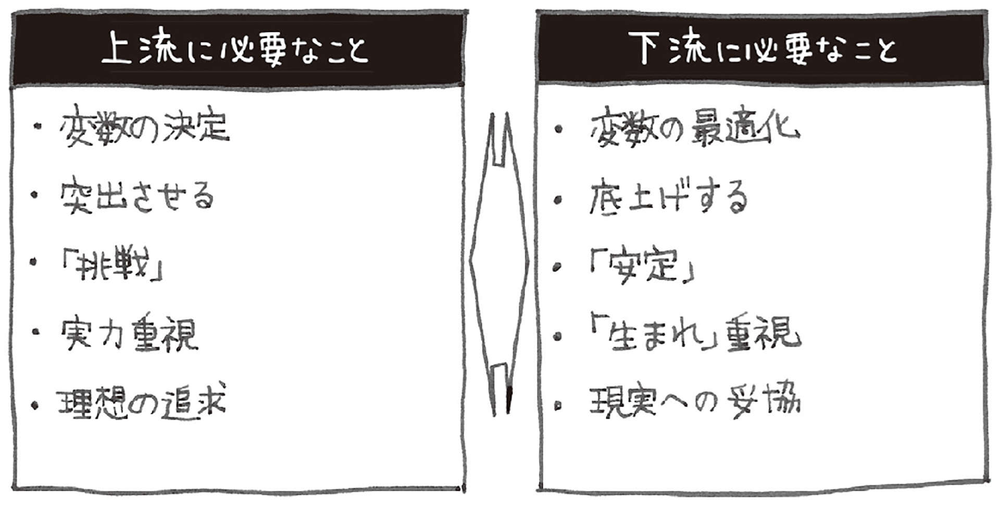
このように上流と下流では特性が異なり、必要とされる価値観やスキルも大きく異なるのに、それをごちゃ混ぜにして「どちらが正しい」といった議論が行われています（第21 章参照）。前提を共有していない議論は、実は議論にすらなっておらず、ここでも「不毛な議論」と「無駄な努力」と「理不尽な思い」に膨大な時間が使われているのは残念なことです。
重要なのは「どちらが正しい」ではなく、対象とする議題が上流の問題なのか下流の問題なのかを前提として共有することです。その上での議論ができれば、どれだけの時間が創造的に使われるようになるかは計り知れません（これは別の切り口から第21 章で再び論じます）。
この上流下流の法則の根本原因となっているのが、「具体と抽象との間の非対称性」と「１：９の法則」（次の図）です。
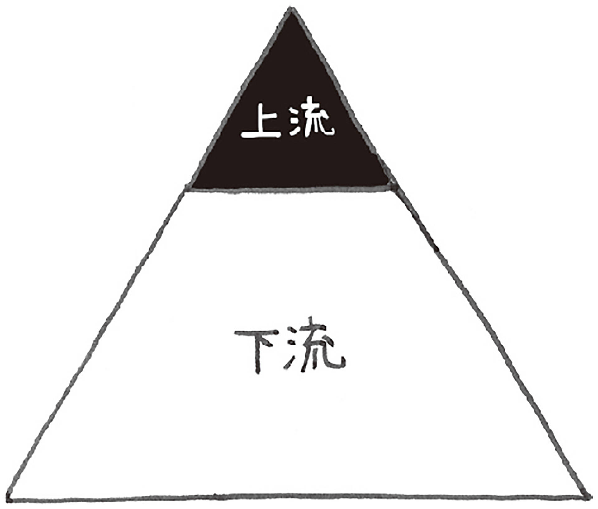
まず上流で重視される「コンセプト」「理想」「方針」といったものは抽象度が高い価値観のため、下流の価値観からは理解されません。またその数は川の流量と同じく下流側が圧倒的に多数派であるために、下流側の世界において上流側の声が通ることはきわめて困難です。
これが「下流→上流への逆流」をほぼ不可能にしている理由です。したがって、下流の世界では抽象度の高い発想を要する「不連続な変化」を起こすことは困難であり、これが第8 章で述べたような「劣化のリセット」が同一組織や社会の中でできない理由です。
そうであるにもかかわらず、毎日どれだけ多くの小舟が河口付近から渓谷を目指して一生懸命流れに逆らってオールをこぎつづけていることでしょうか。同じ川の中を逆流するのは短い距離なら可能でも、山頂の最上流までたどり着くのは「無理」なのです。上流が恋しければ、「再び山に登って新しい川を見つける」しかないのです（次の図）。
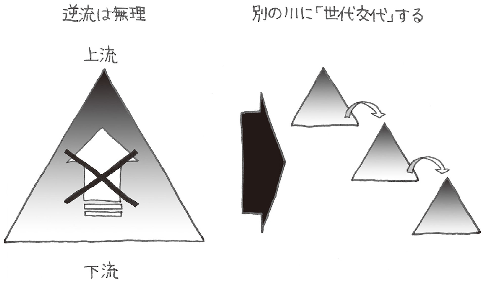
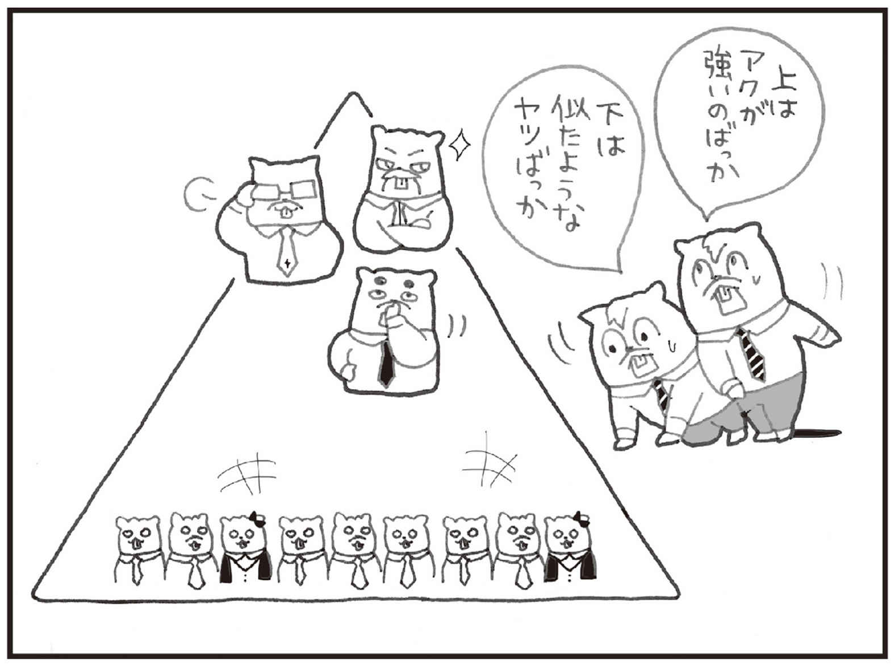
第Ⅲ
部
ストックの単調増加性
ゆく河の流れは絶えずして、しかももとの水にあらず。よどみに浮ぶうたかたは、かつ消えかつ結びて、久しくとゞまりたるためしなし。世 中 にある人と栖 と、又かくのごとし。たましきの都 のうちに、棟 を並べ、甍 を争へる、高き卑 しき人のすまひは、世々を経 て尽きせぬ物なれど、是 をまことかと尋 ぬれば、昔 しありし家はまれなり。或 は去 年 焼けて今 年 作れり。或は大 家 滅 びて小 家 となる。住む人も是に同じ。所 もかはらず、人も多かれど、古 見し人は二三十人が中に、わづかに一人 二人 なり。朝 に死に、夕 に生るゝならひ、たゞ水の泡 にぞ似たりける。不知 、生れ死ぬる人、いづかたより来 りて、いづかたへか去る。又不知、仮 の宿 り、誰 が為 にか心を悩 まし、何 によりてか目を喜ばしむる。その主 とすみかと、無常を争ふさま、いはば朝 顔 の露に異ならず。或 は露落ちて花残れり。残るといへども、朝 日 に枯れぬ。或は花しぼみて露なほ消えず。消えずといへども、夕 を待つ事なし。
──鴨 長 明 『方 丈 記 』（『新訂方丈記』岩波文庫）より
第11 章
「微分と積分」と現実
増やすのは簡単、減らすのは困難
第Ⅱ部では「時間の不可逆性」に関して、なかでも「質的な不可逆性」の側面について述べました。第Ⅲ部では、「量的な不可逆性」について解説します。
ここで着目する非対称性は、「フローとストックの関係性」に関してです。
では、フローとストックの違いについて見てみましょう（次の図）。
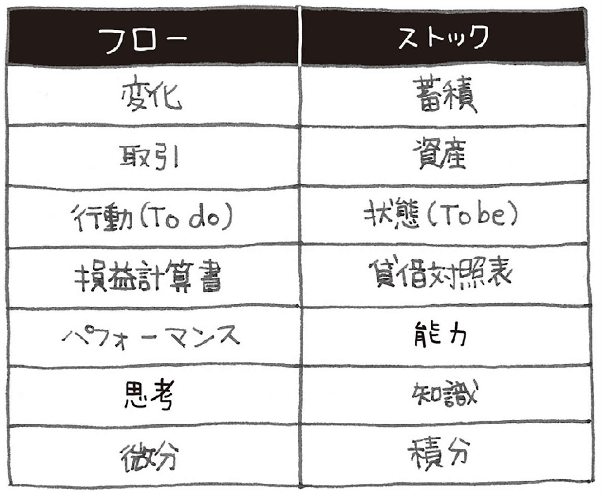
フローとは文字通り「流れ」で、ストックとは「蓄積」です。ここで言う「流れ」は個々の変化のことで、その蓄積がストックになっていきます。お金の流れでいえば、一つ一つの取引がフローでその積み重ねの結果が資産というストックになります。会社の財務諸表でいうと、損益計算書（Ｐ／Ｌ）がフローで貸借対照表（Ｂ／Ｓ）がストックを表したものです。
人間の活動でいえば、一つ一つの行動がフローで、その結果としてたどり着いている状態がストックです。単年度の業績がフローだとすれば、それらが蓄積されて個人の能力として積み上げられたものがストックです。
先の知的能力の縦軸と横軸とに照らし合わせると、「考える」という行為がフローで、その結果蓄積された「知識」がストックという関係です。
数学的に言うと、フローとストックとの関係は「微分と積分」との関係になります。
高校時代に習ったときには、「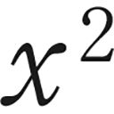 を微分すると2x になる」ことをひたすら覚えて公式に当てはめ、「一体なんのためにこんなことを勉強するんだろう」と思った人が多いと思いますが、この数学の概念は、日常のさまざまな分野で見ることができます。
ここまであげたような「フローとストックの関係」を明らかにし、「なんらかの変化」がその後の状態にどのような影響をもたらすかを予測するために日常的にさまざまな場面で用いられているのが「微分と積分」で、最も身近な例が「天気予報」でしょう。
「非対称性」の話に移りましょう。
フローとストックは、「蛇口とタンク」のようなイメージです（次の図）。着目するのは「入り口と出口」の非対称性です。
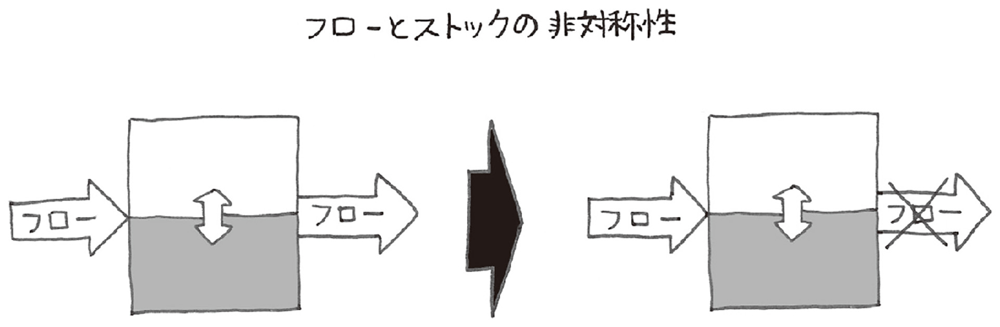
風 呂 桶 と水道の蛇口、風呂桶の底の栓を考えればわかりますが、入り口と出口の関係は一見、対称のように見えます。ところが実際は異なります。
人間の知識や経験には、前述したように、一度貯まってしまったら人間心理による非対称な「粘性や抵抗」が存在するため、力学における運動エネルギーから熱エネルギーへの変換が不可逆的であるように、「入」よりも「出」のほうが抵抗が大きくなります。つまり「入れるのは簡単だが、出すのは容易ではない」という状況であり、結果として「ストックを増やすのは簡単だが、減らすのは容易ではない」という構図になります。
第Ⅱ部で述べたように、社会や組織においてはさまざまな形でこのようなストックの単調増加性が見られます。
代表的なのが「年功序列」です。会社での給料は基本的に在籍年数が大きく影響します。「完全実力主義」のように見えるスポーツの世界でも年俸は完全に単年度の成績（つまりフロー）で決まるのではなく、「在籍年数や実績」といった形のストックで決定します。ですから、何億円という年俸を得ているのはえてして、新人よりも「下り坂」に差しかかっているベテラン選手のほうが多くなります（もちろん、「人を呼べる」「チームをリードする」という点でベテラン選手の「成績に表れない実力」を評価するという意味では合理的です）。
実際は、ストックの入り口と出口が非対称であるのにもかかわらず、対称であるかのような錯覚に陥りがちです。要は増やしたものはいつでも同じだけの努力で減らせると思いがちですが、実は逆向きの動きに必要なエネルギーはとんでもなく大きいために簡単には後戻りできないことが多いのです。
第12 章
のこぎりの法則
増えだしたら止まらない
ストックの入り口と出口は対称ではなく、実際には単調増加であることにより、社会や組織におけるさまざまな事象は、時間の経過とともに「のこぎり形」に増減します（次の図）。
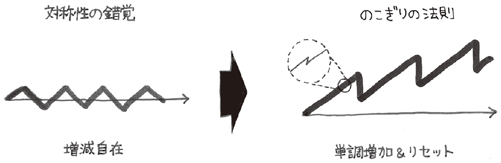
ここでは、単純に増加するだけでなく、あたかも「のこぎりの歯」のように、ゆっくり上がっては急激に下がるというサイクルをある周期で繰り返しながらも長い目で見ると増えていく、という動きになることが特徴です。
「増える」という一方向はおもに自然な流れでいつのまにか進行し、ある段階で「このままではまずい」と気づく人が現れて、そこで一気に減らす活動を行って一時的に下がるのですが、また自然に増え始めるといった形です。典型的なのは会社組織等におけるルールの数です。引っ越ししたばかりの部屋の散らかり方にも似ています。自然にものが増えていって、ある時期に大掃除で減らしますが、また次の日から......といった具合です。
このように、自然に任せていれば増える一方で、減少させることが難しいという現象は、世の中にあふれています。
・ルールや規則
・会議
・信号機
・特急の停車駅
・テレビのチャンネル
・リモコンのボタン
・電子機器の機能とマニュアルのページ
・スマホのアプリのアイコン
......
こうなってしまうのは、第５ 章で述べた人間心理のなせるわざです。増やすのは簡単でも、減らすには勇気や意気込みと、増やしたときより長い時間が必要になります。
ルールや規則が良い例です。「善と悪」の非対称性で述べたように、何かトラブルがあると、再発防止のために必ずなんらかのルールができます。時間がたってさまざまな環境が変化したあとでそのルールが「ほとんど意味をなさない」ことがだれの目にも明らかな状況になっても、「ではなくせるか？」という話になると、「何かあったらどうするんだ」という話になって、だれもその責任を取りたくはないので、結局なかなか減らせないという構図です。
このような「自然の流れ」を把握していないと、安直にさまざまなものが増えていくことになります。「人畜無害」なものであればいいのですが、ルールなどは「何かある」たびに増えることで人々の活力や効率性を阻害することになり、そればボディブローのような「抵抗係数」となって私たちの日常のさまざまな場面で立ちはだかってくるのです。
家電などの電子機器に固有の「のこぎりの法則」もあります。リモコンのボタンの数や機能の数も新製品が発売されるたびに徐々に増えていき、いつの間にか「ほとんど使わない」機能であふれていくことになります。
さらに、このような高機能製品での特徴的な現象として、「Ｘ曲線の法則」とでも呼べる現象があります。機器の性能や機能が、まったく新しいコンセプトの新商品が発売された当初は、顧客のニーズや期待に一つ一つ応えていたのに、あるところからそれらを上回って、「技術者の自己満足」的な要素が強くなっていってしまうことです（次の図）。これにも「過去の成功体験」というストックの単調増加性が影響します。初期に覚えてしまった「機能の追加で顧客が喜ぶ」という思考回路から抜け出すことは想像以上に難しいのです。
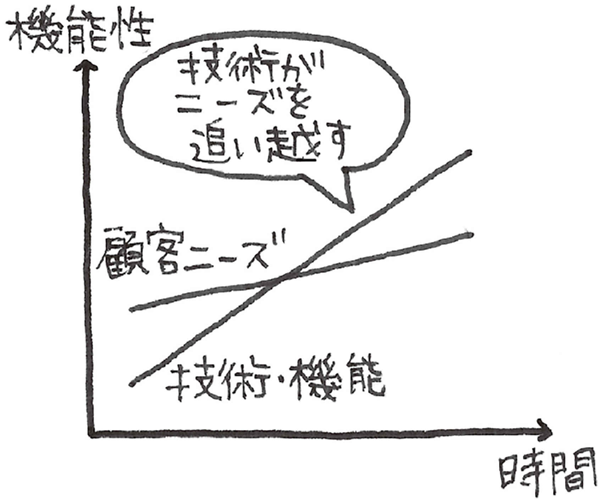
一度上げてしまった品質のレベルを下げるのは至難の業です。まさにこれも不可逆と言えます。
どの世界でも「プロの仕事」には、ユーザが気づかないレベルでの「こだわり」があり、あとから成功例の話を聞くと「実はこんな細部にもこだわりがある」という意外な美談になることも多いのですが、裏を返せば「お客にはまったく気づかれない」レベルでの手間やコストが意外にかかってしまっていることも意味します。
これをさらに一般化すると、「はじめは提供者側の知恵の付加価値と利用者側のニーズがマッチして提供者主導で進むが、ある時点でそれが飽和して提供者側の価値がニーズより余剰になって一人歩きするために、利用者視点がより重要になる」という形になります。これは製品の世界のみならず、さまざまなサービスしかり、あるいは「官から民へ」という動きも基本的にこの構図を反映したものと言ってもよいでしょう。
このように「いつの間にか積み重なっていて簡単には戻れない」ことに気づかないでいると、「努力に対しての成果」の効率がいつの間にか下がっていきます。それが「無駄な努力や抵抗」につながっていくのです。
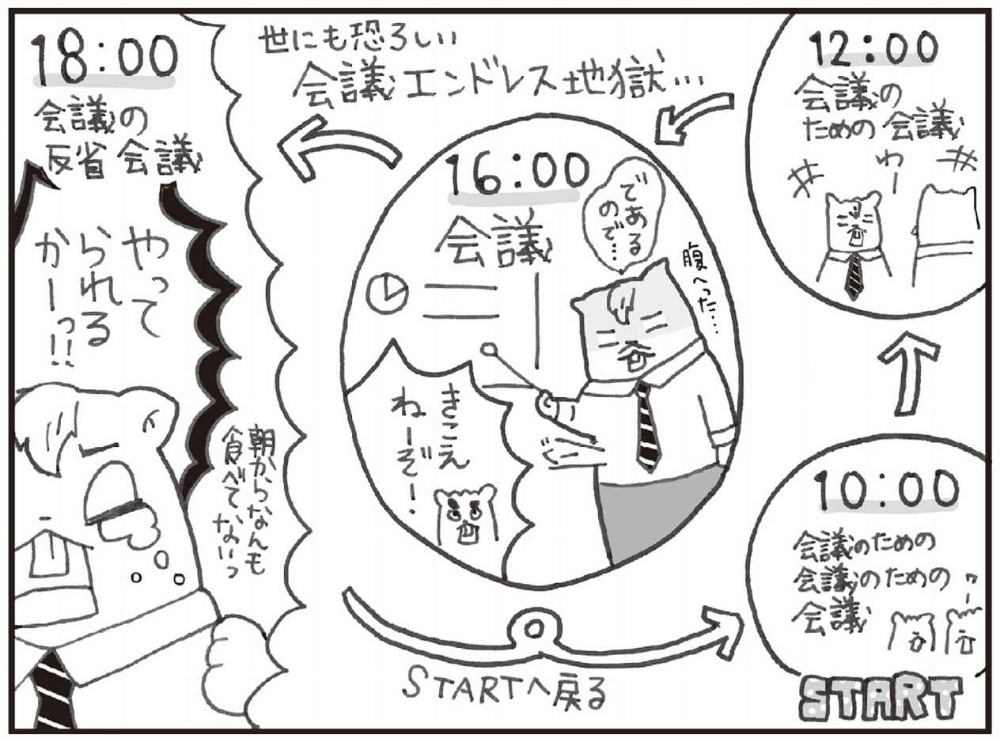
第13 章
折り曲げの法則と
ストックのジレンマ
「対極」は「紙一重」に変わる
ストックの非対称性がなぜ理不尽さの原因となるのか？ そのキーとなるのが、本章で取り上げる「折り曲げの法則」です。
まずは以下について考えてみてください。
①長所の「反意語」は何でしょうか？
②成功の「反意語」は何でしょうか？
③チャンスの「反意語」は何でしょうか？
普通に教科書的に考えれば、それぞれの答えは、①短所、②失敗、③ピンチということになります。しかし、本当にそうでしょうか。
ものの見方を次の図のようにガラッと変えてみます。
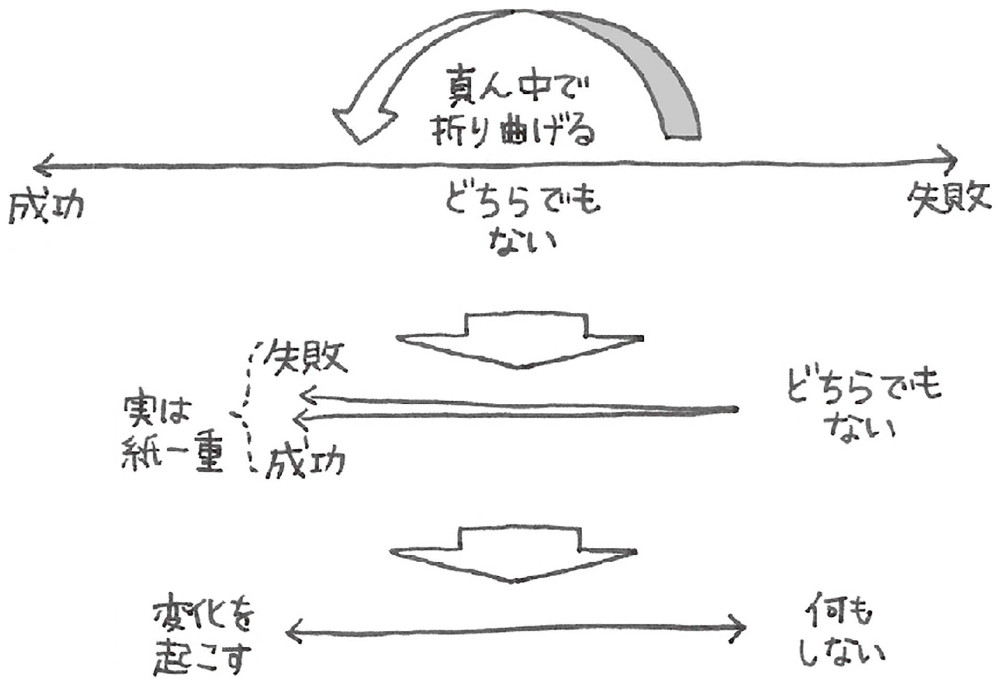
まずは普通のものの見方を示したのが、最上段です。長所と短所、成功と失敗、ピンチとチャンスが左右の「対極」にある状態です。
次に図の矢印棒の真ん中を「関節」にして、右と左を合わせるように「折り曲げて」みます（図の中段）。
そうすると、成功と失敗が「紙一重」で重なり、それまで中立点だった「どちらでもない」部分が対極にきます。つまり、「成功」の反意語は「失敗」ではなく「何もしない」ということになります。
他の設問についても、同様に考えてみると、次のような解答が見えてきます。
①「長所＆短所」←→「特徴がない」
②「成功＆失敗」←→「何もしない」
③「ピンチ＆チャンス」←→「何も起こらない」
これが先述のストックの話とつながります。要は、この図の左側は「濃い状態」、つまり何らかのエネルギーや特徴が蓄積された状態で、右側が「薄い状態」、つまり何も蓄積されていない状態というイメージです。
着目すべきは、常識では対極にあるはずの二つの状態が実は紙一重の「裏表」の関係になりうるということです。例として人間の性格の長所と短所について考えてみましょう。
・「思慮深い」という長所は「行動が遅い」という短所と紙一重
・「親切」という長所は「おせっかい」という短所と紙一重
・「熱心」という長所は「しつこい」という短所と紙一重
・「話題豊富」という長所は「蘊 蓄 自慢」という短所と紙一重
......
つまり、あらゆる長所はすべて短所になりうるのです。②と③についても、同様に考えてみましょう。
「成功と失敗」については、一つの成功体験がそれにこだわりすぎるあまり次の失敗体験につながったり、リスクをとって行動するという観点では、未来の成功は未来の失敗と紙一重ということもできます。
「ピンチとチャンスが紙一重」は飲食店でのトラブルを考えればわかりやすいでしょう。オーダーを忘れてしまったとか、お客様に飲み物をこぼしてしまったといったトラブルは、ある意味決定的な「ピンチ」と言えますが、逆にそこでのトラブル処理を丁重に行えば（無料チケットを奮発するなど）、リピート顧客になる可能性も秘めています。よくも悪くも「顧客との感情的な距離が近づいている」という点でピンチとチャンスが紙一重だったことになります。
「長所と短所」や「成功と失敗」について個人の例をあげましたが、この話は「社会や組織」にも同じように当てはまります。
第Ⅱ部で述べた不可逆性に、前章までに述べたストックの不可逆性を合わせると、組織や社会に蓄積されたさまざまな知的資産、例えば知識、ノウハウは成長の時点では「長所」であってもある時点を境に一気に「短所」に変わっていく可能性があるのです。それは例えば時代の変化でこれまでの知識が役に立たなくなるどころか、新しいことを覚えるにはむしろ「足かせ」になってしまうという状況です。
先述の「成功体験の復習」に加え、「ブランド」や「名声」もしかりです。長年かけて蓄積したブランドや名声には不可逆性があり、一度確立されたイメージは「変化への大きな抵抗」になります。有名であるがゆえに失敗が許されなくなり、会社の採用では有名会社であるがゆえに「寄らば大樹の陰」型の社員が増えていきます。
成長期にはよかれと思って一方的に増やした規則やルールも、ある時点から陳腐化しているにもかかわらず「単調増加性」という性質から、減らすことが容易ではなく効率化をそぐという現象が起こってきます。
このような状況に打ち勝つには、どうすればいいのでしょうか。ストックをリセットして、同時に長所も短所もリセットしてもとの状態に戻すには、「出口側の風呂桶の底の栓」を開けてももはや手遅れです。根本的な解決策は一つ、「新しい風呂桶」を用意することしかありません。
実際は、こうした原理を認識しないまま、何とかして「出口から水を排出しよう」と膨大な時間が使われています。この液体は入ったときのようなサラサラの水ではなく、粘性の高いドロドロの液体になっています。しかも、入り口からの流入は続きます。攪 拌 しようが出口の掃除をしようが、この現象を逆転させるのは不可能と言えます。
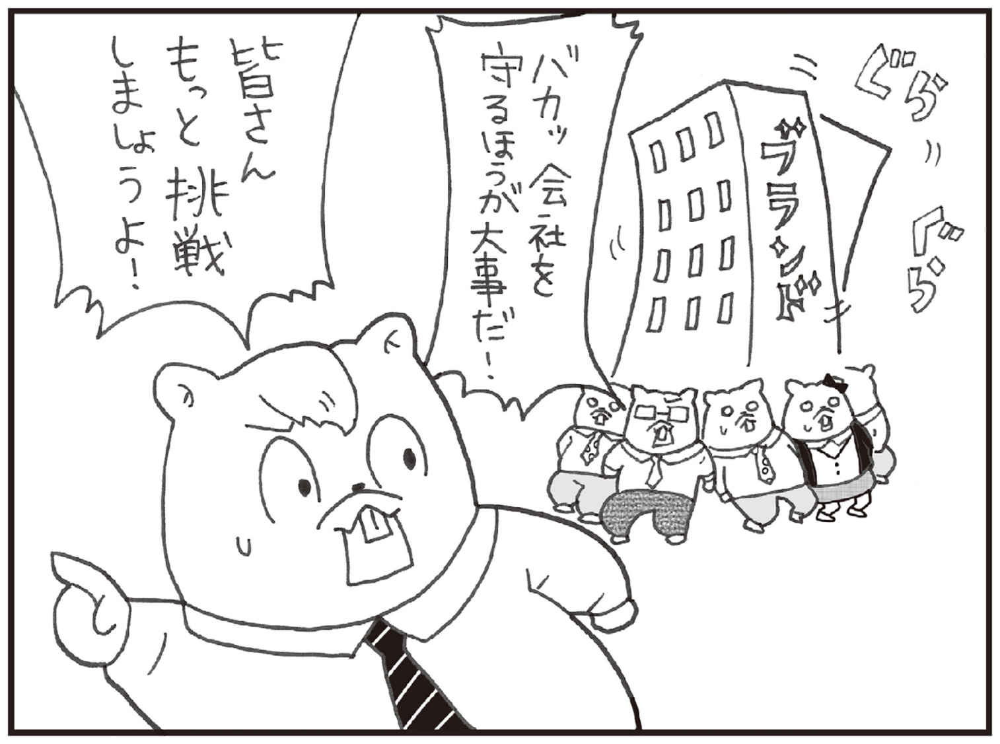
第14 章
大企業「病」という幻想
もう「あの時代」には戻れない
「意味のない長時間の会議ばかりでうんざりだ」
「形式的なルールばかりあって効率が下がる」
「きれいな書類をつくることばかりに時間をとられる」
「皆自分の部署のことばかり考えて全体のことを考えていない」
「最近社員に個性がなくなって金 太 郎 飴 のようになってきた」
......組織が大きくなってくると、このような「症状」が必ず現れてきます。いわゆる「大企業病」と言われるものです。「お役所仕事」などと言われたりもします。このような状況になると、組織の活力がなくなるため、トップや創造性の高い社員は嘆き、なんとかして「昔のように」自由闊 達 で風通しのよい組織を取り戻そうとします。
よかれと思ってしてきたことが、なぜこのような事態を生んでしまうのでしょうか。どうすれば、このような状況を変えることができるのでしょうか。
実はこれらは、本章のテーマである「不可逆性」の典型的な例なのです。
物理の世界でのエントロピー増大のごとく、人間社会でも同じようにこのような不可逆的劣化が不可避に起こっていくことについては、第Ⅰ部で述べたように、人間の根本的な知的・心理学的性質を考えると、ある意味で当然のことと考えられます。
マックス・ウェーバーは組織の支配の方法として、「伝統的支配」「カリスマ的支配」と並んで「合法的支配」を挙げていますが、この合法的支配のためには、「形式主義」「文書主義」あるいは「官僚制」といったものが適していると述べています。あるいは軍隊を見れば、規律やルールを何よりも重んじ、明確なピラミッド型の階層による指揮命令系統を確立することが「一糸乱れぬ」組織を統治するために何よりも必要であることがよくわかります。
つまり、合理的な組織運営のためには冒頭のように（内容よりも）「形式」を重視し、階層や肩書きを確立し、文書作りを優先させ、セクショナリズムを発揮するのは悪いことでもなんでもなく、これを「理不尽だ」と考えるほうがおかしい、ということになります。
第10 章の上流・下流の法則とストックの単調増加性を考慮すると、組織が生まれ、成長して大きくなっていく過程で、統治形態が変化していくのはあまりに自然な流れと言えます（次の図）。
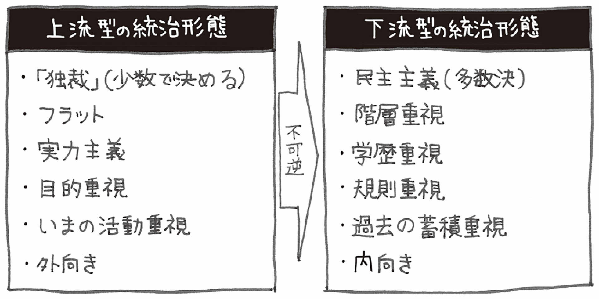
いくつか、成熟にともなう組織の変化を見ていきましょう。
・「独裁」から「民主主義」へ
会社であれば「カリスマ創業者」から「調整型リーダー」、政治でも同様に「独裁者による統治」から「民主主義」へ移行していく理由は第Ⅱ部で述べた通りです。会社も政治も成熟すればするほど（良くも悪くも）「求心力」は弱まっていきます。まだ社会が成熟していない新興国などで、性急に実現した民主主義が必ずしもうまく機能しない状況もこのような構図を考慮すると十分に理解ができます。
「独裁」は政治の世界では悪いことの象徴のように思えますが、そもそも独裁者は権力を握る過程では、それまでの体制の不満を一気に解消したからこそ、その地位を築けたと言えます。また、ビジネスの世界を考えれば、スタートアップや比較的歴史の浅いベンチャー企業はカリスマ的な創業者のリードがポジティブに働くことが多いことを考えれば、むしろ良いことでしょう。
（結果として構成員全体の幸福につながるような）「良い独裁」と（その逆の）「悪い独裁」があるとすれば、ビジネスの世界では、「悪い独裁」は競争によって自然に淘 汰 されていきますが、政治の世界では「競争」がない分、「悪い独裁」が淘汰されにくいでしょう。その点から見れば独裁は危険であると言えますが、「上流型の統治形態」としてはむしろ当然の体制といえます。
・「創造」よりも「コミュニケーションと調整」へ
前述の通り、組織は成熟するにしたがって、新しいものの創造よりも内部のコミュニケーションと調整の重要性が高まってきます。しかもそれは人数の増加とともに文書主義・形式主義になっていきますから、コミュニケーションのために文書を作り、形式的な会議が増えていくのは、自然で合理的な流れです。したがって、「きれいな資料作りに時間をかける」ことや「形式的な会議に時間をかける」ことに、「本来の仕事をする時間が奪われる」という理不尽さを感じたり、批判したりするのはある意味で見当違いであると言えます。
ここまで述べたような、「創造からコミュニケーション・調整へ」「外向きから内向きへ」「問題発見（変数の創造）から問題解決（変数の最適化）へ」といった流れは、会社の中でどういう社員が昇進しやすいか、あるいはトップにどういう人が選ばれるかを見れば明白です。
上流から下流に組織が成熟化するにともなって、トップになる人のタイプは、「新しい事業を立ち上げた人」→「売上の実績を挙げた人」→「優秀な社内スタッフ」（人事・企画出身）というふうに変化していきます。学歴も最上流のベンチャーのような会社では「無関係」ですが、組織の成熟化によって「下流」に行くにしたがい、次第に有名大学の割合が増えていきます。
その会社がどのフェーズにいるか（どういう価値観が重視されるか）は、トップの経歴を見れば推し量ることが可能です。
このような傾向は会社の世界だけではありません。歴史を見ても、戦国時代や明治維新など、下流となった体制が大きくリセットされて上流に戻るときに活躍するのは「下級武士」なども多く、身分とは関係のない個人の実力がものを言いますが、次第に社会が成熟化して下流へと変化するにつれて、身分制度が確立されて必要以上の「実力による下克上」が起こらないほうが、組織や体制の安定のためにはよいということです。
組織が成長し、成熟するということは、さまざまなストックが不可逆的に溜まっていくことを意味します。したがって「折り曲げの法則」で述べたように、これが長所であるとともに短所であり、完全な表裏一体の性質になっていくことがわかります。
ではなぜ組織における上の世代は、若い世代に対して、能力や活力がなくなったと嘆くのでしょうか。
これも第６ 章で述べた「１：９の法則」が当てはまります。上流の世界を成功体験として持っている先輩社員と、すでに下流になってしまってから入社してきた社員の間には、不可逆的な変化において時間的なギャップが存在します。上の世代から見た下の世代はつねに頼りなく、上流の組織から見た下流の組織はつねに「官僚的」で「活力がない」と思われてしまうのです。
「大企業病」というのは病気でもなんでもなく、成長した組織を維持し、最適に管理するために必要な状態になったというだけなのです。
第Ⅳ
部
「自分と他人」の
非対称性
賢 げなる人も、人の上 をのみはかりて、己 れをば知らざるなり。我 を知らずして、外 を知るといふ理 あるべからず。されば、己 れを知るを、物 知れる人といふべし。かたち醜 けれども知らず、心の愚 かなるをも知らず、芸の拙 きをも知らず、身の数ならぬをも知らず、年の老いぬるをも知らず、病 の冒 すをも知らず、死の近き事をも知らず、行 ふ道の至らざるをも知らず。身の上の非 を知らねば、まして、外 の譏 りを知らず。但 し、かたちは鏡 に見 ゆ、年は数 へて知る。我が身の事知らぬにはあらねど、すべきかたのなければ、知らぬに似たりとぞ言はまし。かたちを改 め、齢 を若くせよとにはあらず。拙 きを知らば、何ぞ、やがて退 かざる。老いぬと知らば、何ぞ、閑 かに居 て、身を安くせざる。行 ひおろかなりと知らば、何ぞ、玆 を思ふこと玆にあらざる。
──吉 田 兼 好 『徒 然 草 』「第百三十四段」（『新訂徒然草』岩波文庫）より
第15 章
宇宙と「人間の心」
「絶対的中心」があるかないか
第Ⅳ部と第Ⅴ部で述べる非対称性は「空間の非対称性」です。「空間」といっても、目に見える物理的な空間というよりは、私たちが頭の中で浮かべる「心の空間」に着目してみます。
空間において対称な関係とは、どの場所も対等であることを意味します。裏を返せば、非対称であるとはその関係性を決定するためのなんらかの「中心」がどこかに存在することを意味しています。中心が存在すると、その周辺には必ず「内と外」という非対称な関係が発生するからです。
物理的空間である宇宙に関しては「中心」はいまのところ見つかっていませんから、宇宙空間では「左右」も「上下」も対称な関係となりますが、「人間の心」という宇宙空間には、「絶対的な中心」が存在し、それがさまざまな非対称性を生み出しています。
「人間の心の中心」とは何でしょうか？ それは「自分自身」です。すべての人には「自分」という中心が存在し、これをベースにしてものを見て、そして考えます。したがって、自分が他人を見る目と、他人が自分を見る目は決定的に異なっているのですが、あまりに当たり前のこのことを人はしばしば忘れてしまいます（次の図）。
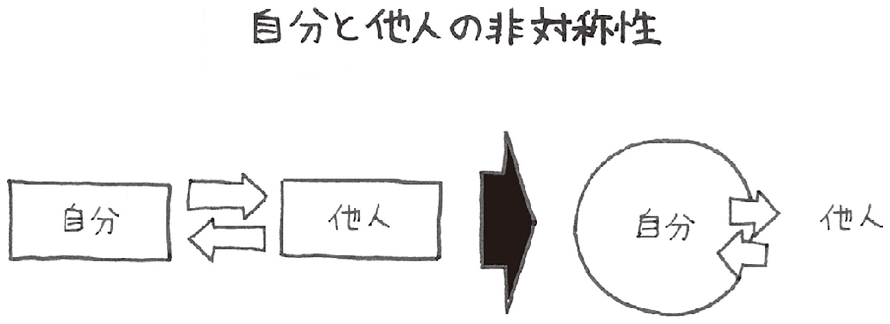
「ＡさんとＢさんの考え方が違う」という個性の違いを指しているわけではありません。すべての人にあまねく当てはまる「自分と他人との関係性」のことを言っています。
それがこの第Ⅳ部で解説する「自分と他人」の非対称性です。人は「自分を中心にしてしか、ものごとを考えられない」ということです。そのことが、実にさまざまな理不尽さを生み出します。
「自分と他人」の非対称性を示すいくつかの例を見てみましょう。
・他人にいちばん話したいのは愚痴と自慢だが、いちばん聞きたくないのもまさにその二つ
・中途半端に覚えたことを他人にアドバイスしたいが、中途半端に覚えたことを上から目線で人から言われるのは最高に「むかつく」
・自分のことは特別だと思うが、他人のことは一般化して考える
・自分の成功は実力だと思うが、他人の成功は運がよかったと思う。失敗は逆で、他人の失敗は実力だと思うが、自分の失敗は運が悪かったと思う
このほか、人間「いかに自分がかわいいか」の例はいくらでもあげられるでしょう。問題は、そのことへの自覚がないか、あるいはあったとしても、実態とはかけ離れて超過小評価されている点にあります。「そうは言っても、自分は客観的、理性的な考え方をしている」と錯覚していることです。
「自分だけが損をしている」と思っている人と、「自分だけが得をしている」と思っている人の損得量を自己申告してもらって全国民分を足し合わせたら「大赤字」になることは間違いないでしょう。各自の「申告量」が正しいとすれば、どう考えても計算が合いません。
人間がいかに自分勝手なものの見方しかできないかというのは、「自己矛盾」という言動となって現れます。例えば以下のようなものです。
・「ネットで他人の批判ばかり言っているやつは許せない」というＳＮＳの投稿
・「代案を出さずに反対するのはやめろ！」という「反対への反対」
・「人の言うことは鵜 呑 みにするな」というアドバイス
・「かけ声だけじゃなく行動がすべてだ！」というかけ声
側 から見ていると、笑い話のようなこれらの発言ですが、当人は大真面目でまったく気づいていないということは、日常的によく起こっているのではないでしょうか。
「非は全部相手に押し付ける」という行為も、「自分を棚に上げる」ことの一例です。
「最近の若者はハングリー精神がない」と言いますが、そのような飽食の世の中を作ったのは、誰あろう、その嘆いている年配者の世代です。「うちの会社には○○の社員が育たない」と経営者が言った場合、その社員の資質はその経営者が作ったものであり、「うちの子は......ができない」と親が言った場合、その子の性格は（遺伝も含め）その親が作ったものです。会社でいえば採用・教育、親子でいえばＤＮＡ・環境は百パーセント、会社や親の責任です。
「悪い報告を上げろと言っても上げてこない」と経営者や管理職は嘆きますが、報告を上げた瞬間に叱 責 され評価が下がるとすれば、悪い報告は上げません。そして「自分の頭で考えない」のは、権限を委譲せずに「最終的にはすべて上が決める」からです。あるいは感情の起伏の激しい上司の部下は、決して論理的に考えるようにはなりません。一番重要なのは、「なぜその提案が重要なのか」ではなく「いつ（上司の機嫌が良いときに）提案を上げるか」だからです。もちろん、なかには「やはり改めるべきは自分のほうだった」と気づく人もいますが、この構図自体に気づかない場合には改善のしようもありません。
このような傾向は、昔から人間が持っていた特性と考えられますが、ＳＮＳの時代になって多数の人たちへの発信の場が飛躍的に増加し、可視化も進んだこともあって圧倒的によく目につくようになってきています。
・自分の新入社員時代のことはすっかり忘れて「理解できない言動をする新人」について嘆く
・自分の子供時代のことは棚に上げて子に「勉強しろ」と言う
・自分たちが選んだのはすっかり忘れて一方的に政治家を批判する
......
人間とはこのように自分を棚に上げる「自己矛盾」の塊 です。個々のＡさんやＢさんが悪いわけではなくて、それが人間というものなのです。自分を棚に上げなければ、とてもじゃないが人生やっていられません。
この根本的な人間の性質が、さらに自分と他人との非対称性という火に油を注ぎます。
これらの「非対称性」はとりもなおさず、「客観視」の難しさを物語っています。心理学などでいう「メタ認知」という考え方ですが、いかに自分を上から見られるか、言い換えれば、「自分」という「宇宙の中心」を離れて、いかに自分自身を宇宙空間の真っ只中に放り込んで、他のすべての物体と同等に見られるかということです。
私たちが世の中に抱く「理不尽さ」は、起こっている現象が原因ではなく、自分たちの頭の中にあるのです。人間の頭の中こそが理不尽である、ということを受け入れられれば、「理不尽」が「理」に変わります。逆に、受け入れられなければ、すべては「無理」に変わります。
次章以降では、「自分と他人の非対称性」が引き起こす「対称性の錯覚」の例をあげていきましょう。
第16 章
コミュニケーション
という幻想
「言葉の意味」の共有は難しい
「どうしてあの人はいくら言ってもわかってもらえないんだろう？」
「あれほど確認したのに、なぜ伝わらなかったんだろう？」
日常におけるコミュニケーションは、理不尽さの宝庫と言ってよいでしょう。人里離れてネットもつながらない状況で一人で自給自足の生活をしていない限り、私たちはコミュニケーションを避けて通るわけにはいきません。そこから来るストレスや、結果としての「無駄な努力」も半端な量ではありません。
こうしたコミュニケーションによって感じる理不尽さも、ほとんどが「対称性の錯覚」から来ているというのが本書の仮説です。
「コミュニケーションにおける最大の問題は、それが達成されたという幻想である」
これはアイルランド生まれの劇作家、ジョージ・バーナード・ショーの言葉です。これほどコミュニケーションの本質をとらえた言葉はないと言えるでしょう。そもそもコミュニケーションなどというものは「幻想」なのです。
「そんなことはない。つい先日も職場の○○さんと、お互いの目指す方向がぴったり一致していると意気投合したところだ」といった反論があるかもしれません。職場の同僚でも、クラブ活動の先輩後輩でも、あるいは家族同士でも、「ツー・カー」で心が通じ合っている人がいる、と思っている人は少なくないかもしれません。
ただ、よく考えてみてください。そもそも相手の思っていることが自分の考えと一致しているということを、どうやって証明するのでしょうか？
「そんなの簡単だ。この前も同期の仲間たちと『あの本は面白い！』って見事に見解が一致したんだから」という反論があるでしょうか？
でも、この「面白い」という表現、あまりに曖 昧 ではないでしょうか？ それこそ人の数だけ、その意味は存在するはずです。「面白い」を「感動した」「眠れなくなった」「自分の考えと一致した」などとどんな言葉に置き換えたところで、同じです。言葉の曖昧さについては、第４ 章で述べた通りです。
コミュニケーションにおいて、「伝える」と「伝わる」の間に大きなギャップがあり、伝えたからといって伝わったとは思うな......とはよく言われることですが、そもそも、「伝わる」という状態の定義そのものが曖昧であり、その状態自体が相当あやしいものなのです。
だからコミュニケーションには意味がない、というわけではありません。だからこそ コミュニケーションが重要なのです。
このようにコミュニケーションというのは、所 詮 は幻想でしかありません。「自分は他人のことをわかっている」という大きな勘違いと「でも他人はちっとも自分のことなんかわかっちゃいない」というさらに大きな誤解が、「常にわかっているのは自分で、わかっていないのは相手である」というコミュニケーションの非対称性を生み出し、これが永遠の「無理」へとつながっていくのです。
そもそも相手に自分のことを理解してもらおうなどというのが無理な話ですし、自分が相手のことを理解しようなんていうのも無理な話なのです。でも「だからコミュニケーションなんてなんの意味もない」のではなく、だからこそ少しでもその幻想を前向きに利用して、「気持ちの良い幻想」に変えていく必要があるのです。「わかっている」が起点ではなく「わかっていない」を起点にすれば、「少しでもわかった気分になる」ことでプラスに考えられるようになります。
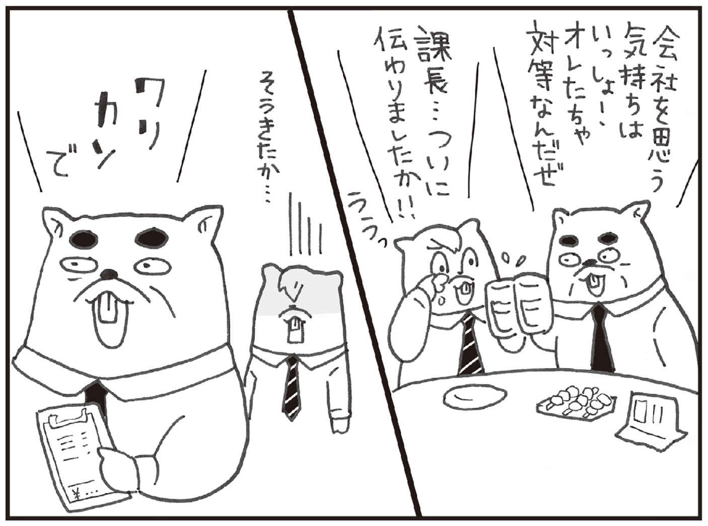
第17 章
「公平」という幻想
基準は人間の数だけ存在する
「なぜあの人が......」
「なぜ自分が......」
たいていの「理不尽さ」はこのような思いからくるのではないでしょうか。
理不尽さを感じる根底には、すべての人間が「公平」であるという前提があります。つまりすべての人間において対称性が成り立ち、「世界に中心はない」という前提です。その前提自体が「理不尽さ」という諸悪の根源といえるでしょう。
世の中が公平であるはずがありません。容姿に恵まれている人・いない人、家柄が良い人・良くない人、才能に恵まれている人・いない人など、人はみな生まれた瞬間から異なる環境や資質を持っていることは明白です。「人は才能ではない、やる気と努力でことを成し遂げた人はいくらでもいる」としても、「熱中できる」「努力ができる」というのは、それこそが最大の「才能」でしょう。
「人生は公平である」というのは、「そう思わなければやっていられない」のかもしれませんが、現実はそうであるわけがない のです。
「公平さの基準」も人によって異なり、それこそ人間の数だけ基準が存在します。
「結果の公平さ」と「機会の公平さ」だけを見ても、相矛盾します。全員が同じ機会を与えられて、運や実力によって結果に差がついた場合にそれは公平な競争だったと言えるのか、逆にがんばってもがんばらなくても「全員同じ賞品が出る」というのは公平と言えるのか、これは両方とも成立することはないので、永遠の課題と言えます。会社のボーナスの配分方法にしても、「全員同額」が公平だと言う人もあれば、「成績や能力に応じて」配分するのが公平であると言う人もいます。
やっかいなのは、「成績」や「能力」を公平に評価する方法などこの世に存在しないということです。成績も能力も、「自分が高く評価される基準」こそが「公平」な基準であると、みなが思っているからです。
要するに「人の数だけ」公平さは存在するので、私たちが持ち出す「公平さ」は所 詮 、「自分にとって都合のよい公平さ」でしかありません。これを自覚している人は、「公平」などという言葉は簡単に使わないはずですが、「世のため、人のため」に公平さを振りかざす人は、その「自覚のなさ」ゆえにたちが悪いと言えます。いっそのこと「自分の勝手な都合のためにこちらがよい」と主張したほうがよほど潔いでしょう。
五人の同僚の中で自分だけが上司から評価・抜 擢 されたとすれば、「いい上司だ」「見てないようでちゃんと見ている」「実力から公平に判断すれば当然だ」となり、それが他の誰かであれば、「不公平だ」「好き嫌いで決めている」となるわけです。そこにいるのは「公平な上司」でも「理不尽な上司」でもありません。すべて「自分の勝手な都合」が生み出した錯覚でしかないのです。
「善と悪」という概念も同様です。「自分にとって都合が良い、悪い」と言えば、明らかに「自分にとって」という主観であることがわかります。しかし、「善・悪」と言うと、いかにも絶対的な基準のように聞こえてしまいますが、これも「誰にとってか」によって定義などいくらでもできるものです。
一方で私たちは、子供時代から「世の中は公平であるべきである」と教えられてきていますが、アメリカの名門・ケネディ家の有名な家訓は「人生は公平だと思うな」です。ケネディ家にとってみれば、その言葉の意味は、「だからエリートにはエリートとしての責任がある」ということになるかもしれません。でも実は、世の中の大部分を占める「一般人」の私たちにとっても、この言葉を教えたほうがよほど「理にかなった」教育です。
「世の中は基本的に不公平である」という前提を置けば、そのとたんにほとんどの「理不尽さ」が解消するのではないでしょうか。
人生は「不公平」にできています。だから「努力は無駄で意味がない」のではなく、だからこそ 、与えられた「公平ではない環境」の下 で、努力することに意味があるのです。そして努力の成否は「他人と比べて結果がよかったかどうか」ではありません。比較対象は、「努力しなかった自分」です。
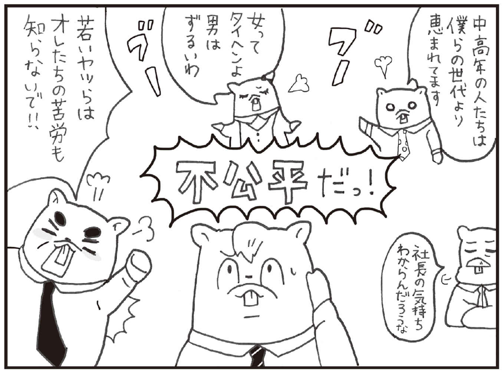
第18 章
「対等」という幻想
批判する人とされる人の間に
横たわるものは
ＳＮＳの普及によって、ネット上での「半分公」とも言える場で、さまざまな批判をする人、される人が飛躍的に増えてきました。ただでさえ「錯覚」であるコミュニケーションが指数関数的に増幅されたことによって、そこでは「炎上」など、さまざまな「理不尽な」トラブルも発生しています。
その原因の一つとしても、「対称性の錯覚」があげられます。これはいわば「プレイヤー」と「観客」との間の非対称性に起因するものです。
「関係性に関する対称性の錯覚」の典型的な例は、「批判する人」と「批判される人」との間で起きるものです。インターネットやＳＮＳの発達によって、近年ますます顕著になってきており、スポーツの試合などにおける「プレイヤーと観客」の非対称性とも言えるものです。
プレイヤーと観客との間の非対称性については、誰が見ても明らかです。プレイヤーは、実際にフィールドでプレイをするわけですから、（例えば「大失敗するかもしれない」というような）リスクをさまざまな形で抱えていますが、観客は基本的に責める一方で自らが攻撃される立場になるようなリスクは何も負っていません。また、プレイヤーは「限られたエリート」であって、観客は「能力では圧倒的にかなわないから見るほうに回っている」ことは誰もが自覚しています。
このような「プレイヤーと観客」の非対称性には誰もが気づいており、いくら観客側がヤジを飛ばしたり、罵 声 を浴びせたところで「実際にやっている」プレイヤーと「見ているだけ」の観客との間にはとてつもなく大きな差があることは理解しています。
ところが、この構図が「ネット上での政治家や有名人への批判」になると難しくなってきます。誰もが簡単に批判を半ば公に発信できる時代になって、この対称性を錯覚している人が批判する側にもされる側にも多いように見えます。
批判する側とされる側の非対称性について整理しておきます（次の図）。
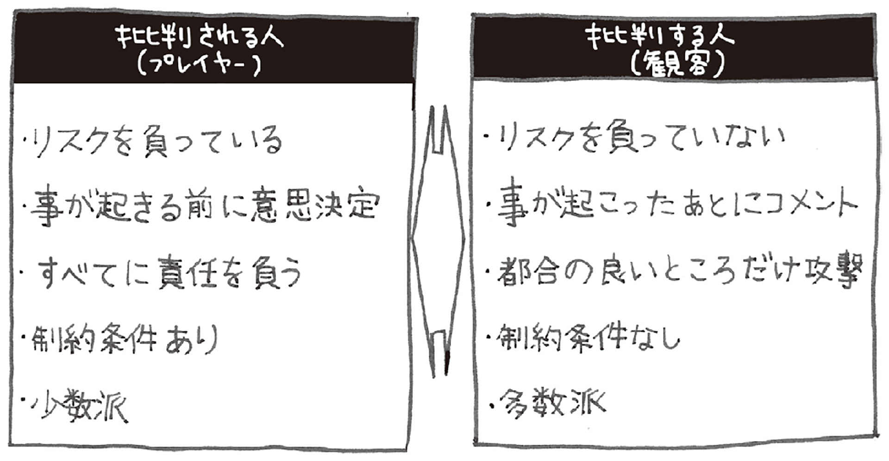
実際にフィールドでプレイしている「選手」は、常にさまざまなリスクを負い、諸々の制約条件の中でプレイをしています。わかりやすい制約条件は時間、人、お金です。限られた時間で限られたリソースを使ってなんらかの意思決定をしなければならないのですから、そこには必ずなんらかの妥協が存在します。それらを割り切ってでも先に進まなければならないのがプレイヤーだからです。
批判する側は、その妥協した弱点を突いてきます。批判された側からすれば「そりゃ十分な○○があればそうしたかったよ」という類の話であっても、批判する側は勝ち誇ったようにその弱点を突きます。しかも、結果が出てから攻撃すればいいので、批判する側が「必ず勝つ」戦いです。
また、「プレイヤー」はフィールドや試合全体への責任を持つ必要がありますが、「観客」は自分が批判しやすい都合の良いところだけを抜き出して、部分的な勝負に持ち込めばよく、観客（批判する側）が優位な議論だけを展開できるのは明白です。どんなに事情通の観客だって、舞台裏も含めたすべての事実を知った上でコメントすることなどできないはずです。
このように、批判する側は常に結果が出たあとの「あと出しジャンケン」なのですが、そのことに気づくのはなかなか難しいのが人間の心理です。これは第５ 章で述べた「ついつい他人にものを言いたくなってしまう」ことに加えて、次章以降で述べる「部分を全体だと錯覚してしまう」といった人間の思考の癖のなせるわざと言ってよいでしょう。
「あんなしょぼいプレイ、オレでもできるよ」
「だったら自分でやってみろ！」
という「不毛な争い」は、ネットの普及で「観客」と「プレイヤー」の違いがプロスポーツほどはっきりしなくなっている分余計に増幅しています。
この構図を理解した者同士が対峙して初めて、それが「建設的な批判」となって、良いプレイにつながっていくはずです。
第Ⅴ
部
「見えている人と
見えていない人」
の非対称性
ここに天照大御神、怪しと似 爲 ほして、天の石屋戶を細めに開きて、內より告 りたまひしく、「吾 が隱 りますによりて、天の原自 ら闇 く、また葦 原 中 國 も皆闇けむと似 爲 ふを、何 由 にか、天 宇 受 賣 は樂 をし、また八 百 萬 の神も諸 笑 へる。」とのりたまひき。ここに天 宇受賣白 ししく、「汝 命 に益 して貴き神坐 す。故 、歡喜 び笑 ひ樂 ぶぞ。」とまをしき。かく言 す間に、天兒屋 命、布刀玉 命、その鏡を指 し出 して、天照大御神に示 せ奉 る時、天照大御神、いよよ奇 しと思ほして、稍 戶より出でて臨 みます時に、その隱 り立てりし天 手力男 神、その御 手 を取りて引き出 す卽ち、
──『古事記』「天 の石 屋 戸 」（岩波文庫）より
第19 章
決定的な非対称性
「見えていない人」には
「見えている人」が見えない
新しい概念や考え方を古い概念に凝り固まった人に説明して理解してもらうのは至難の業 です。「頭の固い上司を説得して新商品の予算を取る」「新しい仕組みを導入するために権力者に説明する」場面などで、「わからない人に説明する無力さ」を感じた人も多いことでしょう。
ここにも世界中で「無駄な努力」に膨大な時間が費やされていることでしょう。
どんな分野でも、「わかっている人」と「わかっていない人」がいます。そこまでは異論がないと思います。しかし、ここで重視したいのは、「わかっていない人」が大きく二つに分けられるということです（次の図）。
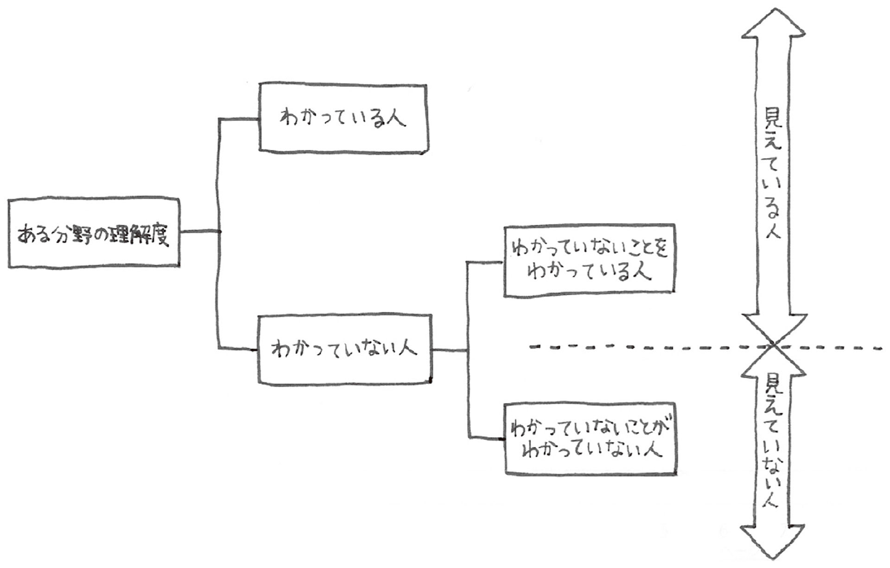
つまり、自分が「わかっていない」ことをわかっている人と、「わかっていない」ことすらわかっていない人の二通りです。本章以下のテーマである「見えている人と見えていない人」の非対称性とは、図に示した境界線によって分かれます。これは「わかっている・いない」の間の境界線とは違っており、実は本当に大きな断絶があるのはこちらの線引きのほうであるということが重要です。
「見えていない人」と「見えている人」との思考回路の違いを示したものが次の図です。
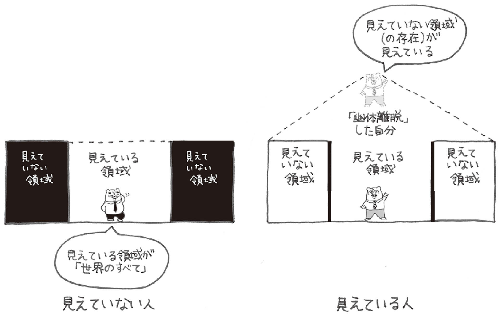
一見してわかる最大の違いは、「視点の高さ」です。この図では、見えている領域と見えていない領域との境界を、ある一定の高さを持った壁で表現しています。
「見えていない人」は、この壁は「世界の終わり」に見え、壁の向こう側の世界に思いを至らせることはありません。つまり「見えているものが世界のすべて」であり、実は壁そのものが見えていないのです。
これに対して「見えている人」は、「幽体離脱したもう一人の自分の視点」を持っており、自分を外側から見ることができます。壁の上から見ることで初めて「壁の内と外」という認識が可能になるのです。これが「見えていないことがわかる」というイメージです。
「見えていない人」は最強です。「根拠のない自信」を持っており、「自分に見えている世界」が世界の中心であり、すべてそれが「正しい」という信念に揺るぎがありません。新しい概念や理解できない概念を提示されても真っ向から否定し、決して譲ることはありません。したがって、見えていない人にはあまり悩みはありません（たぶん）。
これに対して「見えている人」は、自分がわかっていることとわかっていないことの区別がつき、理解できないことについては「間違っているのは自分のほうかもしれない」という疑いを常に自分に対して向けています。
皮肉なことに、見えていない人はいつも「わかった、わかった」と言っていますが、見えている人はいつも「わかったかどうかはわからない」というスタンスです。だから一見、見えていない人のほうがわかっているように見えてしまいます。本当に「見えている」とは限らないのですが。
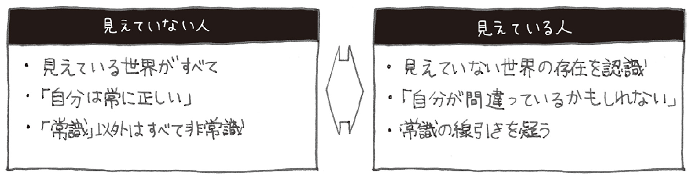
そして決定的な非対称性は、「見えている人」から「見えていない人」は見えるが、「見えていない人」から「見えている人」は見えないということです。いってみれば「マジックミラー」の構図です（次の図）。
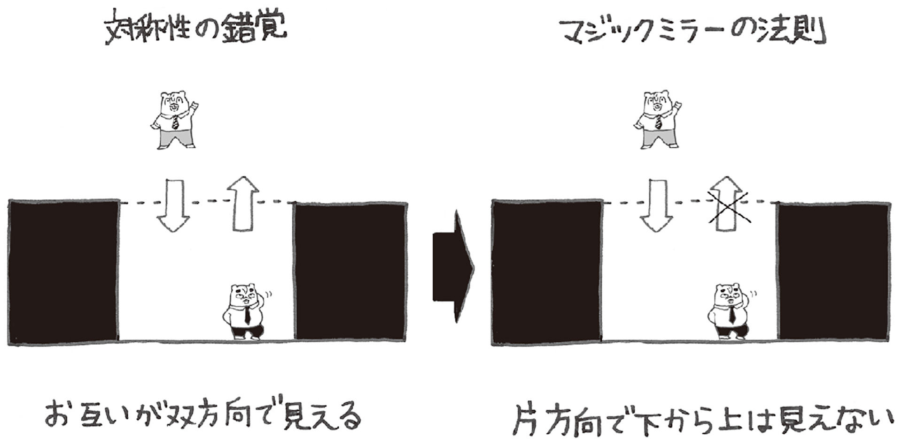
この対立構図が、「見えている人」の側、「見えていない人」の側の双方に「理不尽さ」を生み出すのです。この二者が議論をした場合のお互いが感じるストレスを次の図に示します。
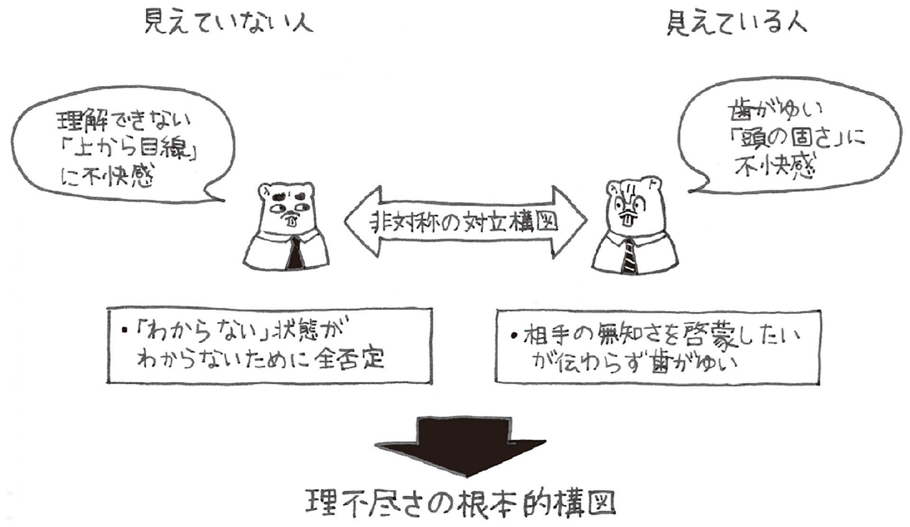
「見えていない側」にも「見えている側」にも各々の言い分があります。
見えている側からすれば、狭い世界に閉じこもり、その価値観だけで生きている人たちが歯がゆくて仕方がありません。広い世界を見てしまった頭の中は、もう狭い世界の価値観では窮屈で生きていくことはできません（「見えていない→見えている」は不可逆という意味でも非対称です）。
この歯がゆさゆえに、どうしても見えている人は見えていない人に広い世界を経験させ、その良さを認識させたくて仕方がないのです。「なんでこの人はわからないんだろう？」そんな声が世界中で毎日どれだけ発せられていることでしょうか。見えている人は「常識に縛られている人」も同じように見えます。そこから抜け出した世界を知っている人は、その呪 縛 が解かれた世界を見せてあげたくて仕方がないのです。
斬新なアイデアを出すためによく言われる「常識にとらわれるな」という言葉がありますが、この言葉は本当に「常識にとらわれている」人には絶対に届くことはありません。この言葉を聞いて勇気付けられるのは、こういう言葉を「とらわれている人」にいつも発している「とらわれていない人」が「その通りだ！ 自分は一人ではなかった」と思う状況においてだけです。
なぜなら、そもそも「常識にとらわれている人」は「常識にとらわれている」というその状態そのものを理解できないことが問題だからです。したがって、その言葉を聞いてそれが自らに発せられた言葉であること自体がわからないのです。だからその後の効果が出ようはずがありません。つまりそれは「無理」なのです。
ところがこの見えている側の「歯がゆさ」は、見えていない人には「大きなお世話」以外の何物でもありません。先述の通り、そもそも「見えていない」とか、「縛られている」というボキャブラリー自体が「見えている人」だけのものです。逆にその「上から目線」の物言いが「見えていない人」には不快でたまらず、余計に聞く耳を持たなくなります。「意識高い系」という言葉も、おもにこのような不快感を言葉で表現したものと言えるでしょう。
企業における「上流思考のイノベーション思考」と「下流思考のオペレーション思考」の間の議論も同様です。
イノベーションに必要なのは、
・常識や既存ルールの打破
・失敗の許容
・「変人」の登用
・階層の打破
・生まれや学歴にとらわれず実力重視
・顧客の言うとおりにしない
といったことであり、これらは多くの学者やコンサルタントが事例をまとめ、数々のイノベーターたちも自ら主張している「あまりに当たり前」のことであるにもかかわらず、下流の価値観に染まった人にはいくら言っても本当の意味で理解できませんし、「もともと従う気もない」のです。
真の意味での議論が成り立つのは、「見えている人と見えている人」の間だけです。それ以外の議論はそもそも議論にすらなっていないので、やるだけ時間の無駄です。ところが残念ながら、「議論になっていないこと」自体がわからないのが「見えていない人」であることが、この問題の根の深さを物語っています。
見えていない人の思考回路で代表的なのが、「思い込みの激しさ」です。思い込みの激しい人とは、例えば「被害者意識」の強い人、感情的に怒っている人、「自分の正しさ」を露ほども疑っていない人です。すべて悪いのは他人と環境のせいという「他責」の人も同様です。部下に向かって「何度言えばわかるんだ！」と怒っている上司は、「わかっていないのは自分のほうである」ことに気づくまでは、それこそ「何度言ってもわからない」状況が永遠に続くことになるでしょう。
同様に、このような人には「いくら言っても時間の無駄」であることは、だれもが一度や二度は経験があるでしょう。このような状況でたとえ一秒でも時間を使うのは、
①相手は変わらず状況は一切改善しない
②なおかつ相手を不快な気分にさせる
③さらに自分も不快になる
......という三重苦でしかありません。
ならば、いっそのこと、無駄な努力はしないほうが建設的かもしれません。ただしそういう場面を建設的に活かすとすれば、思いを至らすべきは、果たして自分自身が他の場面でその「思い込みが激しい人」になっていないかどうかです。改めて自己診断するためのよい機会になるでしょう。
本項を読んで「まったくあの人がそうだよなあ......」と周囲の「他の誰か」のことのみ思い浮かべた人は、自分自身が他の人から見たらまさにその人になっている危険性があります。「見えていない人が生み出す理不尽さ」を作り出しているのは「あのわからずや」ではなく「自分自身」なのです。
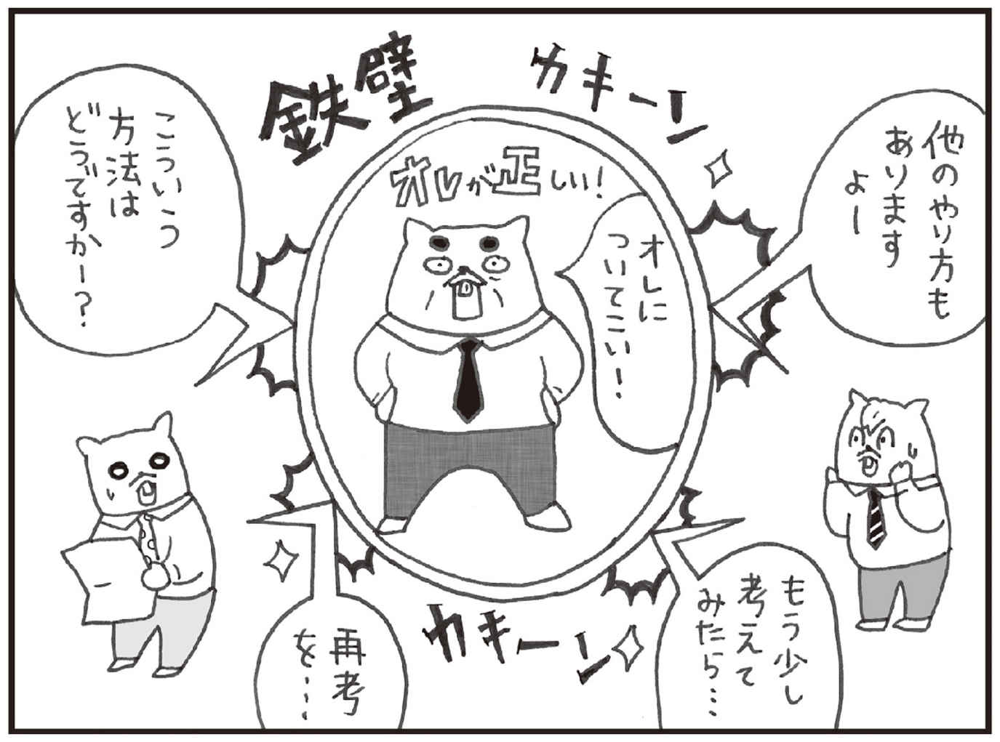
第20 章
「全体像」という幻想
自分の視野の狭さには
気づきようがない
「全体を俯 瞰 することが重要だ」
「部分最適でなく全体最適の視点で考えなければいけない」
このようなやりとりで用いられる「全体」という概念自体も、きわめて曖 昧 です。
そもそも「何が全体か？」をどう考えるかが問題です。「全体」というのも所 詮 、何かの前提を置いた上での全体ということになりますから、「全体」を定義した時点で、それ以外の外側も出てくるという矛盾を含んでいます。「日本国」を全体と捉 えた瞬間に「海外」という外側が出てくるし、「世界」を全体と捉えたら、「地球外」という外側が出てきて......といった具合です。ほかにも「人類」を全体と捉えても、他の動物が出てくるかもしれないし、動物を全体と捉えても植物が......となります。
このように、「全体」というのはある視点を持った人がその定義の下 に用いる言葉で、逆に言えば「部分」というのも、あくまでもその定義に対しての「部分」ということになります。つまり、「全体」というのも実は「部分の一種」でしかないのです。
前章で述べた「見えている人」と「見えていない人」という区別も「見えている人」からの視点です。どちらが「見えている人」でどちらが「見えていない人」なのかというのは必ずしも白黒はっきりしたものではありませんが、上で述べたような「ある基準」で見たときにその全体像が押さえられるかどうかというのが一つの基準になります。
つまり、「見えていない人」にとっては、自分が部分しか見えていないことが自覚できないのです。したがって、「見えていない人」にとって全体だと思っている領域が「見えている人」にとっての一部分でしかないというのが、この問題の重要なポイントです（次の図）。
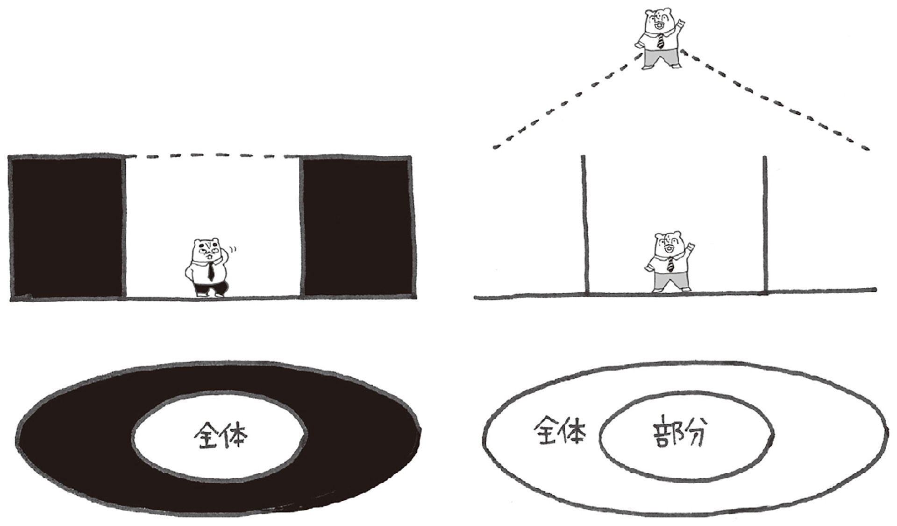
だから、「視野の狭い人」に向かって「もっと視野を広げて」とか「全体を見て」というのはなんの効力もありません。視野の狭い人は「自分の視野の狭さに気づきようがない」のが最大の問題だからです。
これは「気づき」の問題とも言えますが、これに対処するには、逆に「無知」の状態を掘り下げていく必要があります。前章で述べたように、自分の視野の狭さに気づくためにはその「外側の領域の存在」に気づく必要があります。
無知には大きく三通りあると考えられます（詳細は拙著『問題解決のジレンマ』〈東洋経済新報社〉 を参照してください）。
一つ目は「事実の無知」と呼べるもので、「静的な知識や情報」に関する無知です。これは第２ 章で論じた「知識力」に関する知識で、要するに「知っている・いない」で語れる無知です。この種の無知の例は「漢字を知らない」とか「特定の国や地域の風習を知らない」といったもので、指摘されれば簡単に気づくことのできる無知です。
第二の無知は「範囲の無知」とでも呼べるもので、「程度の大小」に関する無知です。小人の国しか知らない人にはガリバーは巨人に見え、巨人の国しか知らない人にはガリバーはただの小人に見えるということです。「本物」のレベルの高さを知らない素人が、（達人から見ると）中途半端なレベルに達して傲 慢 になってしまう状態です。数字で測れるものについてはそのレベルの高さを他人に見せつけられれば、自らの視野の狭さに気づけますが、数字に表せない基準については、本物を見せられてもそれにすら気づけない場合にはそれ以上気づきようがありません。
第三の無知は、「判断の基準そのもの」の無知です。例としてあげられるのは、芸術作品や小説・映画などの「面白さがわからない」というものです。あるいは他国の人や世代の違う人の「価値観が理解できない」のもそうです。この種の無知については、自らはおろか他人に指摘されてもなかなか「そういう世界がある」ことそのものを理解するのが至難の業 です。
以上、三種類の無知について述べてきましたが、気づきやすさの点では、１、２、３番目という順ですが、気づきの重要性はそのまったく逆です。ところが、どれが嘲 笑 の的になるかと言えば、気づきやすさの順になります。それは、そのほうが「だれにでもすぐにわかる」からです。
これも「１：９」の法則が問題となる例の一つです。「わかりやすいもの」は気づかないことによる影響も少ない代わりに、だれにでもわかりやすい分、指摘もしやすく、多数の人の嘲笑にさらされますが、実は本当に根が深いのはだれにでも簡単にはわかりにくい、２番目、３番目の無知なのです。
「部分を全体だと思ってしまうこと」（に気づかないこと）は本当にやっかいです。この自覚がないと、理解できないことを否定することになり、「理不尽なこと」がいつまでたっても解消できないことにつながります。
第21 章
「経験則」という幻想
自分の経験が「部分」であることに
気づけない
世の中には成功体験やそこから得られる教訓があふれています。ところが往々にしてこういった「成功体験から導かれる教訓」は本人のリアルな具体的経験に基づいていることが多く、（良くも悪くも）特殊な経験であるために、リアルで説得力がある反面、再現性や汎用性に欠ける面もあります。
また面白いことに、これらのメッセージにまったく相反するものが含まれていることです。
・「大きな夢が重要」と「現実のアクションが重要」
・「ほめることが重要」と「叱ることが重要」
・「自由が必要」と「規律が必要」
・「論理が重要」と「感情が重要」
第13 章の「折り曲げの法則」で述べたように、一見「反意語」のように見えて実は紙一重のこともありますが、たいていの場合は、絶対的にどちらが良いか悪いかということはなく、場面に応じてそれがプラスになるかマイナスになるかがはっきり分かれます。にもかかわらずその前提条件の部分がごっそり抜け落ちているために、すべての場面においてそれが成功の秘訣であるかのように語られてしまうことになります。
第10 章の「上流・下流の法則」で述べたような場合分けが、その典型的な例です。上流と下流では特性が異なって、必要な価値観やスキルが正反対です。したがって、「創造とコミュニケーションはどちらが重要か」という議論は、少なくともそれが上流型なのか下流型なのかを確認することが前提です。それなくしては、まったく意味のない議論になってしまいます（だから「大企業病を嘆く大企業の人」や「大企業病を批判するベンチャー起業家」が出てくるのです）。
ではなぜ、そのような不毛な議論が後を絶たないのでしょうか。それは、その構図自体に気づいている人がほとんどいないからです。前章で解説した「部分を全体だと思い込んでいる」典型的な症状です。自分の経験した限られた範囲が全体である、と無意識のうちに仮定して話を進めてしまうのです。
この構図を次の図に示します。
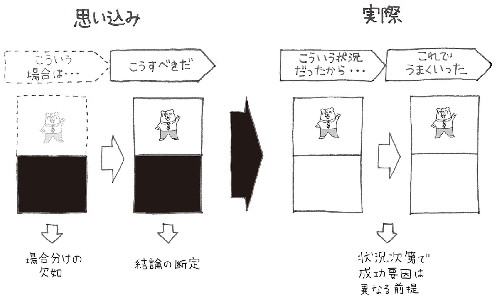
左側がよくある思い込みで、右側が本来考えるべき姿です。ついつい私たちは自分の経験が世界のすべてになってしまうがゆえに「こういう場合は......」の部分をスキップして「こうすべきだ」のメッセージを一人歩きさせてしまいます。
ところが実際には、「こういう状況だったからこうなった......」という成功要因が必ず隠れています。成功要因として「両極」の意見があるのは、それがどちらも成功要因として強力な可能性になりうるからです。例えば「争うべきか」「争わざるべきか」だけを議論することにはなんの意味もありません。すべてが「状況次第」なのですが、その「状況」というのは語っている人にとっての（想像しうる）全体像でしかないのです。
したがって、それだけを見て、どちらが良いとか悪いとかの議論をするのはまったく意味がありません。「それはどういう場合だったのか？」の場合分けを明確にした上で議論を始めることが非常に重要です。むしろ議論すべき論点は「どちらが正しいか」ではなく、「どういう状況だったか」「どういう相手だったか」のほうです。
またこの手の話は、基本的に「結果が良かった」人のほうが圧倒的に多いので、結果論に走りがちなところも傾向としてあります。したがって、「夢をかなえられなかった人」の視点より「夢をかなえた人」の視点が圧倒的に強くなります（これも「１：９の法則」です）。
こうした視野の狭さを克服するには、多種多様な経験をするのがもっとも有効なので、経験談としては、さまざまな「変数」を経験した人のほうが説得力があります。ここでいう「変数」というのは、ビジネスと非営利活動、業界、職種、付き合っている相手の属性などを指します。
おおむね多くのサンプル数を持って語る人ほど抽象度が高い分、視野は広がっている可能性が大きいですが、逆に具体的な実体験がベースの「成功法則」は、何しろサンプル数が「１」である分、きわめて偏 った意見になっているのに、語っているほうはそれがあらゆる場合に正しいという錯覚を持ってしまう可能性があります。自らの経験に限って言えば、「もしそうしていなかったら......」という仮定は検証のしようがないので、聞く側が留意して、メッセージを鵜 呑 みにせずに「どういう場合にその成功要因が当てはまるのか」を十分に見極めていく必要があるでしょう。
第22 章
「啓蒙」という幻想
教育は無力なのか
「あの人はいくら言ってもわかってくれない」
「なんとかして事の重大さに気づいてもらいたい」
「我が社の社員は危機感に乏しい」
......「気づき」の重要性はいくら強調しても強調しすぎることはありません。勉強でもスポーツでも、「上達」や「変化」のための行動をするには、「自らその重要性を理解する」ことが不可欠です。
「気づき」にも非対称性が存在しています。「気づいている人」と「気づいていない人」との関係がまさに先述した「見えている人」と「見えていない人」との関係そのものだからです。
気づいている人は、気づいていない人のことが歯がゆくてたまらず、なんとかして「気づかせよう」としますが、「気づいていない人」からすれば「うっとうしい」「大きなお世話」となります。
「気づき」に関しては三通りの人がいます。
①気づいている人
②気づいていないことに気づいている人
③気づいていないことにすら気づいていない人
必ずしもすべての人が、このいずれかに入るというわけではなく、一人の人間の中でも、ある領域では①、別のある領域では無意識に③になっている......というようなこともあります。
気づいている人（①）はなんとかして、気づいていない人（②③）に「気づかせよう」と一生懸命「啓蒙活動」や「教育」をして努力をしますが、残念なことに、これは「天 岩 戸 の法則」によって、「無駄な努力」に終わることがほとんどです。つまり、「扉は内側から、閉じこもっている人からのみ開けることが可能で、外側からはどんなに努力してもこじ開けることはできない」ということです（次の図）。
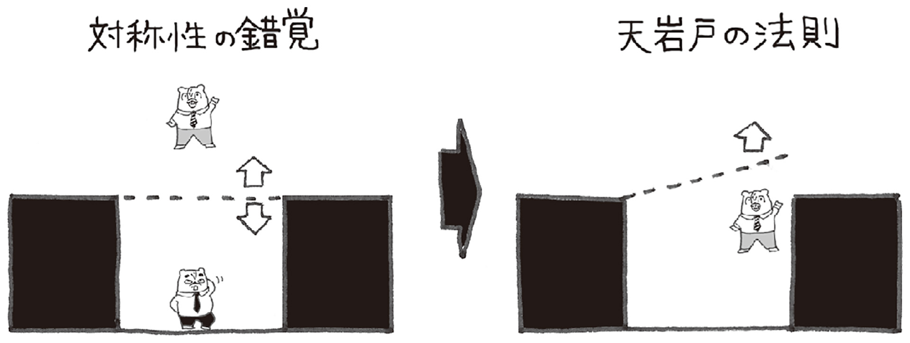
②の人はたいていの場合、外から一言声をかけられただけで、自ら外側の声の意図することに気づいて「岩戸」を内側から開けようとします（すぐに開くかどうかは別問題ですが）から、①の人が何もせずともいずれ自然に扉の中から出てくる可能性が高いですが、③の人のためにいくら外側から扉を開けようとしたり、「洞 窟 （岩戸）の中に向かって」呼びかけたりしても、もともと「聞く耳を持っていない」ので、それに③の人が応じる可能性は限りなくゼロに近いと言ってよいでしょう。
もちろん、「自分がいまあるのはあのときに○○さんが導いてくれた からだ」とか、「親の影響で△△を志した」という人もいます。ところがこれもよく考えてみれば、「岩戸の扉を開ける気になったときに外にいた人」がたまたま○○さんだった......と考えるほうが自然ではないでしょうか。本当に○○さんが導けるのなら、その人が接した人はすべてそうなっているはずですし、「親の影響」に関しても、親というのは、子供にとって最も「岩戸のすぐ外側」にいる確率が高い人ですから、そういう仮説が成り立ってもおかしくありません。
「親の影響」も結局は本人の気づきであるという証拠の一つに、「厳格な親のせいで礼儀正しくなった」人と、「厳格な親の反動で反抗的になった」という正反対の現象があることがあげられます。
このような「錯覚」を最も意識しておくべきなのは、「教育」の場面です。
以上の法則に従えば、「教える」という「他動詞」自体が何の意味もないことになります。「育」のほうも「育てる」（外側からの他動詞）ではなく「育つ」という意識でないと、冒頭のように「まったく努力が報われない」というさまざまな理不尽さを感じることになります。子供なら純粋に「外側からこじあける」ことは可能かもしれませんが、「耳アカ」というストックが溜まりに溜まって「耳が聞こえなく」なっている大人には、外の声が届くことはないのです。
ただし、ここにおいても「場合分けの法則」が当てはまります。教育の分野や領域によっては、外部から変えることが比較的簡単な場合もあります。外部からの「教育」によって比較的わかりやすい変化を起こしやすいのは、「目に見える」領域においてです。
第Ⅰ部で述べた知的能力で言えば、「思考」よりは「知識」のほうが本人の意思ややる気とはあまり関係なく、教育の効果を上げることができます。逆に「思考」の方法を習得するには、本人が「内側から扉を開けている」ことが必要になります。
上流・下流で言えば、下流の世界は外部からの「強制的な教育」の有効性が相対的に上がりますが、上流の世界では「内側から扉を開ける」ことは必須です。
これは必要な能動性の程度の違いといえます。ごく単純化して表現してしまえば、次の図のような構図になるでしょう。
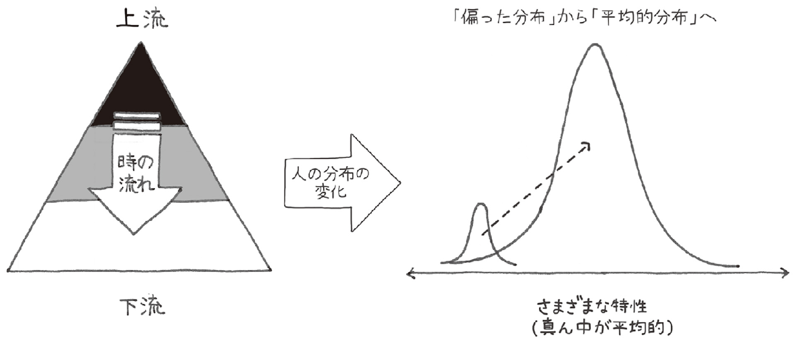
上流は必要な能動性が高く、下流にいくにしたがって中→小と次第に受動性が高くなりながら数が増えていくという構図です。
この順序で、教育の方法も、「自由にさせる→やる気ある人に面倒見よくする→全員に強制ルール化（外部からの）する」と変化していきます。
例えば会社における英会話などのスキルの習得に対する考え方についても、多くが以下のような進化過程をたどります。「自分でやるのが当然→手を挙げた人に補助を出す→全員にコースを用意する」。
これらの施策は、会社の進化段階を間違えると有効でなくなりますので、ここでも重要になるのは「場合分け」です。どの段階でどういう人材をどうしたいかという「場合」を明確に前提条件として決めないまま、「自由が良い」とか「全員強制だ」という議論をするのは時間の無駄です。往々にして「下流思考」で全員の底上げが重要だという論点の人は、それが上流思考の「自由派」のやる気を著しく損ねていることに気づかないのです。
営業の場面での顧客への提案でもこの構図は当てはまります。営業のプロセスにも上流と下流があります。まず最上流で必要なのは、そもそも対象とする商品やサービスの「必要性」を顧客に理解してもらうことです。その後はその商品・サービスの利用方法や効果について具体的に詳細を理解してもらって価格交渉、といったステップが下流のプロセスです。
ここでの上流下流にもここまで述べてきた法則が当てはまります。まずは「重要性を理解して」もらわないことには話にならないため、往々にして営業担当者はその重要性を理解させようと、必死に扉を「外側からこじあけよう」としますが、この段階でのその膨大な努力はたいていの場合徒労に終わります。内側から扉を開けようという段階にない顧客に扉を開けてもらうのはとてつもなく困難です。
「投資対効果」や「他社事例」を求められて紹介しても、この段階での説得はほとんど実を結ぶことはありません。むしろこの段階で必要なのは、相手が内側から扉を開けようとしているかを見極めることで、もしそうでないなら「相手を替える」ほうが、「扉をこじあける」よりもはるかに効率的であると言えるでしょう。ここでも「無駄な抵抗」に膨大な時間が費やされています。
ここまであげてきた事例のように、「やる気を出させる」「自発的に学ばせる」「重要性を理解させる」といった純粋に能動的な意識に関しての「気づき」は常に内発的なもので、外側からいくら大騒ぎしても決して扉を開けることはできないのです。それにもかかわらず、どれだけ多くの時間が「他人を変えよう」「気づかせよう」という労力に費やされているかは想像を絶します。これらすべて「無理」な取り組みなのです。
本章でも最後のメッセージは同じです。「だから教育は意味がない」のではなくて、だからこそ 重要なのです。天照大神が岩戸を開ける気になったのも、外で楽しそうな踊りや歌が繰り広げられていたからです。外の人にできるのは、中の人に「外は楽しそうだからちょっと見てみよう」と思わせること。外側から岩戸に手をかけた瞬間から、それはすべて「無理」に変わるのです。
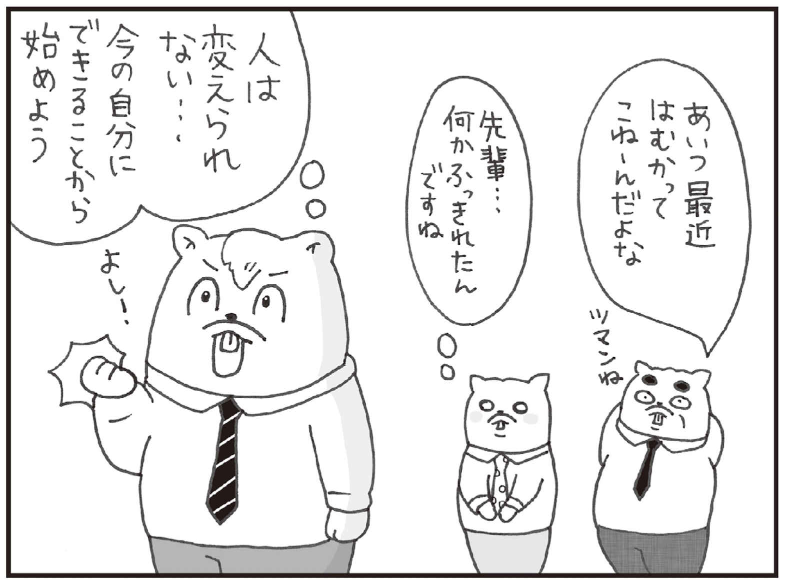
あとがき
人間は先人がさまざまな経験や観察から導き出した「法則」を蓄積し、それを活用することで不可逆的に「賢く」なってきました。自然科学の世界ではそれは明白です。アイザック・ニュートンは（フックの法則で有名な）ロバート・フックに宛 てた手紙で、
「私がかなたを見渡せたのだとしたら、それはひとえに巨人の肩の上に乗っていたからです」
という言葉を残していますが、そのニュートン自身の肩の上にもまた多くの巨人たちが乗って科学を発展させてきました。
ところがこと人間社会の日常に関 わる事象については、いつまでたっても同じ過ちが繰り返され、「無駄な努力と抵抗」が永遠に続いているようにも見えます。
「歴史から学べ」とはよく言われることですが、私たちが歴史から学べることが一つあるとすれば、それは「歴史からは何も学べない」ということかも知れません。逆に言えば人間は自らの一生の中で数々の失敗と「無駄な努力と抵抗」を直接的に重ねることでのみ賢くなっていけるのかもしれません。
本書そのものが単なる「無駄な努力と抵抗」の一つで終わらず、読者の皆さんの経験を抽象化した、役に立つ法則となることを願っています。
細 谷 功
参考文献
本書は以下の著作でのメッセージをさらに抽象度を上げて一般化し、「法則化」したものです。したがって、個々の事例や法則の背景については個々の参考文献に詳しく述べています。すべての本に共通するのは、「現象面」を列挙するのではなく、その原因となる普遍的な原理の考察と法則化です。
『やわらかい頭の作り方』筑摩書房
「折り曲げの法則」ほか、本書で触れていない「身の回りの構造」を解説し、それを日常の考え方に応用して柔軟な発想につなげていく方法について述べています。
『具体と抽象』ｄＺＥＲＯ
「具体と抽象」という座標軸を頭の中に持つだけで「世界が変わって」見えるはずです。本書に出てくる非対称性に関してのみならず、日常生活やビジネスにおける具体と抽象を徹底的に比較して表現しています。
『問題解決のジレンマ』東洋経済新報社
問題発見と川下の問題解決における考え方の違い、無知・未知と既知との非対称性などについて論じ、イノベーターとオペレーターとの対立構図とその対処方法や思考回路の転換方法などについて解説しています。
『会社の老化は止められない』亜紀書房
会社がいかに不可逆的な組織体であるか、なぜあらゆる会社は「大企業病」に向かって突き進むのか？ 人間とのアナロジーを用いて「人間の老化」と「会社の老化」との共通点、相違点について論じています。
『象の鼻としっぽ』梧桐書院（『なぜ、あの人と話がかみ合わないのか』と改題し、ＰＨＰ文庫所収）
人間はみな自分勝手、伝わっているという幻想に関して「象の鼻としっぽ」という仏教の説話のアナロジーを用いて「部分と全体」に関する錯覚がコミュニケーションギャップの原因であるという仮説の下、さまざまなギャップを象の鼻としっぽの構図で論じています。
著者略歴
ビジネスコンサルタント、著述家。1964年、神奈川県に生まれる。東京大学工学部を卒業後、東芝を経てビジネスコンサルティングの世界へ。米仏日系コンサルティング会社を経て、2009年よりクニエのマネージングディレクターとなる。2012年より同社コンサルティングフェローに。ビジネスコンサルティングのみならず、問題解決や思考に関する講演やセミナーを国内外の企業や各種団体、大学などに対して実施している。
著書に、『地頭力を鍛える』（東洋経済新報社）、『いま、すぐはじめる地頭力』（だいわ文庫）、『「Why型思考」が仕事を変える』（PHPビジネス新書）、『アナロジー思考』（東洋経済新報社）、『会社の老化は止められない』（亜紀書房）、『問題解決のジレンマ』（東洋経済新報社）、『やわらかい頭の作り方』（筑摩書房）、『具体と抽象』（dZERO）などがある。
dZERO著者ページでオリジナル動画配信中。
「無 理 」の構 造
この世 の理 不 尽 さを可 視 化 する
著者 細 谷 功
© Isao Hosoya
2016年３月１日 第１刷発行
2019年２月１日 第３刷発行
2019年４月１日 電子版第１版発行
装画＋本文漫画・図 一秒
ブックデザイン 渡邊民人（TYPEFACE）
発行者 松戸さち子
発行所 株式会社dZERO
http://www.dze.ro/
千葉県千葉市若葉区都賀1-2-5-301 〒264-0025
この電子書籍は印刷版第３刷を底本としていますが、電子化にともない、仕様の違いから一部構成を変えています。